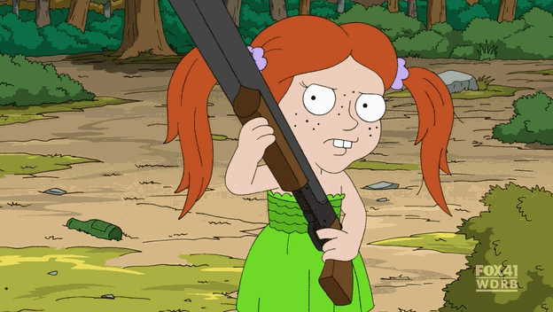

Table of Contents
The game-changer
Enter the metaverse
SQUIRREL
AI. So hot right now. AI.
Need input!
Well, that escalated quickly
Uh-oh, spiago!
≖_≖
Look at the clock, it’s time for a parenthetical
That should appease the Lisp fans.
Haw-haw!
Alpacas
Mexico
France
Canada
Fibonacci
Leonardo Fibonacci
Stop, stop, STOP!
The answer’s wrong and you should feel bad!
FizzBuzz
Walk
What good is a phone call if you’re unable to speak?
Let me give you a hand
Worse than waste
We hate fun
We love... busywork?
Fun will now commence
The good, the bad, and the hilarious
Hilariouser and hilariouser
Poof
Ladies first
Confirmed, guns are the new hands
I take back what I said about hands
GAZE YE UPON IT
MidJourney? More like, MidDestination
And more
Ouroboros
Stack Overflow’s AI worries
Baa-a-a
For amusement purposes only
It just runs programs
It’s my money and I want it now!
Kaboom
Clear as mud
Free beer
Uh, that’s doable
They took our jobs!
Good and evil
Och aye, the noo
For everything else, there’s Mastercard
Eh, more or less
Stop me if you’ve heard this one
The proof is in the pudding
Special
Taking their jobs entirely
You can always eat an apple
The call is coming from inside the house
The Blue Duck
The. Blue. Duck.
Now and later
It’s been a long time
Getting from there to here
“IT WAS TEH HAXORZ!!!”
Pink elephants
Guess who’s coming to dinner
Hoi polloi
To boldly complain where many have complained before
Fun is back
Nothing is exactly anything
From Grim to Whim: the u/AdamAlexanderRies Story
Tinkerings
Just... get it!
Microsoft’s Phi 2
Google’s Gemma
A.I.: Artificial Intelligence
Articles
The game-changer
Blockchain technology is going to change the world. Cryptocurrencies, NFTs, and many other extremely practical applications that definitely exist. For a while, I couldn’t go a single day without seeing someone gush about how that technology would allow us to do amazing things like sell concert tickets or buy cosmetics in video games. It never seemed to occur to those people that these things are already possible. Blockchain technology didn’t allow us to do anything new, or in a better way. But that’s okay! I’ve barely heard a peep about any of that nonsense in months, other than that they’re dying. The (in)famous NFT of Twitter Founder Jack Dorsey’s first tweet, originally having sold for $2.9m, was briefly worth an estimated $4 – bids at later auctions have gone up to several thousand but it’s nowhere near enough for the owner to consider dumping it at such a loss. NFTs’ promise “to make sure the original artist always got paid”... turns out not to have been a promise at all. In fact, I don’t know why the author of the linked article ever believed that it was “a key feature of NFTs.” Payment outside the system isn’t an intrinsic component of a ledger. If you want a good laugh with a generous dose of schadenfreude, give the article a read. Anyway, trampling directly over the corpse of NFTs, a new miracle took the world by storm!
Enter the metaverse
The metaverse is essentially VR (virtual reality), which boils down to a first-person video game with expensive and uncomfortable controls. Instead of seeing your character’s point of view on a TV screen and controlling them via a gamepad, the screen is strapped to your head and you control the character’s point of view by moving your own head in the desired manner. In the VR “video game” of the “metaverse,” you are simply yourself. And what do you do in this digital space? You have meetings with your coworkers. No, seriously, that was supposed to be the hook that got everyone on board. Proponents also assured us hoi polloi that we would eventually be doing everything in the metaverse, because reasons. Reasons like, wouldn’t you rather wear nausea-inducing goggles than sit in front of a tablet computer? Mark Zuckerberg thought we would, so he renamed Facebook to Meta and pivoted their whole business model to the concept, pouring billions of dollars into it (a loss of about $46.5 billion as of November 2023; the company is lucky to have other ventures). Last I heard, the graphics were so dated that a user’s avatar basically looked like a Mii, and the research team’s latest major achievement was giving those avatars legs. Presumably, until that point everyone just looked like a floating torso.
SQUIRREL
But, like a dog spotting a squirrel, or a bird collecting shiny things, the metaverse has been pretty much entirely forgotten in favor of the new hotness.
AI. So hot right now. AI.
Like a certain male model, AI is, well... so hot right now. Companies like Facebook Meta, Microsoft, Google, and everyone else who wants a piece of the pie have dumped the metaverse in the fad bin next to blockchain so they can spend all their time thinking about AI. Unlike those technologies, though, AI has already found many practical applications and novel uses. Frankly, it’s about time people found something actually possibly worthwhile to lose their minds over.
AI as a general concept has existed for a long time, and it’s pretty straightforward: artificial intelligence, as opposed to natural intelligence. The latter is formed in nature, manifested in things like people and very small birds. The former is created via artifice, built with purpose and intent. AI means a machine that can think. However, the AI discussed in this article isn’t quite that. The various competitors in this space aren’t really thinking, like you or I or a very small bird. To build such an AI, a company must gather huge amounts of data and assign human workers to tag those data so that the AI software can easily identify them. (This was true for early AI, but the state of the art has advanced so far in just a year or two that “synthetic training data” generated by an AI in a controlled environment is becoming more popular for its consistency compared to natural data.) Then the AI software accepts prompts and uses the tagged data to assemble relevant responses to those prompts. There’s no underlying “understanding,” per se, like starring in a Spanish-language movie without actually knowing one whit of Spanish. However, the AI’s mimicry of consciousness is sufficiently effective at mimicking consciousness that it shouldn’t be dismissed just because it isn’t alive.
Need input!
Short Circuit is such a great movie. Miraculously, the sequel is even better. The main character is a robot who gets hit by lightning and is somehow endowed with real intelligence and emotion. He (yes, “he”; his name is Johnny 5) is fabulously stupid at first. However, he is capable of learning, so he searches for “input,” reading books at lightning speed, watching television, and so on, which improves his communication skills (although his style is still oddly stilted for some reason – you’d think he’d be able to speak fluent English, but no... okay, the reason is because Hollywood robot must talk funny or humans not believe he is robot, then robot not have point and robot sad). Today’s AI uses a tremendous amount of input, and it’s really good at rearranging and assembling those inputs into sensible output. The computer doesn’t care what kind of data it’s fed, so there are AI models for poetry, conversation, programming, even producing artwork. If you select a suitable AI, you can ask it to tell you why the people in early photographs look so somber, tell it to generate an impressionist painting of a dragon having tea with a princess, or instruct it to write some code in the programming language of your choice.
In fact, one of the early versions of this sort of AI was trained to play a video game, DotA 2. Researchers connected their software to the game’s API (application programming interface, the controls that a piece of software provides to other pieces of software so they can communicate) and pitted one AI team against another, playing out matches much faster than real time. The bots initially did little more than wander around, but they “practiced” so much that they were eventually able to defeat a human team of world champions.
Well, that escalated quickly
It seems like only yesterday that I was idly prodding at Cleverbot and finding yet again that it was still mostly nonsense. Actually, I tried it again just now to verify the URL for the link. It’s not even funny-bad; it’s just bad. I started the conversation by asking if it implemented a GPT (generative pre-trained transformer, the state of the art for conversational AI). It said that it had. I asked when. It replied that it was just a minute ago in the conversation. And when was that? 12:34 (it was actually 11:10). Where did you retrieve that information? I’m not reading it, I’m writing it.
I’ve been checking that sporadically for years, and I don’t think it’s ever improved. It should in theory have improved, as it “learns” with user input, but its cleverness leaves a lot to be desired. That said, Cleverbot and GPT-based AI do share one shortfall: when it comes to conversation, they have the memory of a goldfish. N.B.: The preceding idiom is colorful but ungenerous; goldfish actually have exceptional memories. Chat bots, on the other hand, struggle with follow-up questions that rely on previous context – the longer the thread, the bigger its chance of unraveling.
Uh-oh, spiago!
When my cousin was very young and just starting to learn to talk, his best attempt at repeating “uh-oh, spaghetti-o” was “uh-oh, spiago.” He wasn’t getting it quite right, but we knew what he was trying to say, and of course he eventually became a perfectly personable conversationalist.
≖_≖
That story is relevant! You see, my cousin is an intelligent young man who understands concepts like correcting mistakes with the help of constructive feedback. AI, on the other hand, is not. If an LLM (Large Language Model) was fed incorrect data, or even merely inadequately-vetted data, it will produce bad output. As anyone with an interest in computing will tell you, GIGO: garbage in, garbage out (or, as this infographic puts it, “bias in, bias out”).
Look at the clock, it’s time for a parenthetical
(This idiom's prolificacy fascinates me. Zoomers – zoomer speak for “kids these days” – like to say “FAFO,” meaning (pardon my vicarious French) “fuck around (and) find out,” usually in response to someone biting off more than they can chew and getting injured by the inevitable retaliation. The prefecture of Nancy, France has a thistle on its coat of arms, and the Latin motto “non inuitus premor” (“no one attacks it”), a fact I first learned right this very minute when researching the origin of the phrase “if you gather thistles, expect prickles,” which I first saw in the Tintin novel King Ottokar’s Sceptre. In that book, Tintin reads a relevant travel brochure on his way to the tiny nation of Syldavia, in which he learns how the medieval-era king who was their nation’s founding father thwarted an attacker and coined their national motto:
The King stepped swiftly aside, and as his adversary passed him, carried forward by the impetus of his charge, Ottokar struck him a blow on the head with the sceptre, laying him low and at the same time crying in Syldavian: ‘eih bennek, eih blavek!’, which can be said to mean: ‘If you gather thistles, expect prickles’.
— Syldavian brochure
The 1960s Hanna-Barbera cartoon George of the Jungle actually included two other, lesser-known cartoons, Tom Slick and Super Chicken. The latter’s eponymous hero had the motto, “you knew the job was dangerous when you took it,” usually directed at his hapless sidekick, Fred (a lion wearing sneakers and a red sweater emblazoned with a capital “F”). Finally, the biblically-inclined might prefer the phrase, “what you reap is what you sow” (biblical superfans might additionally prefer that you quote the verse correctly (and fully): “Do not be deceived: God is not mocked, for whatever one sows, that will he also reap.” (Galatians 6:7)) (Rage Against the Machine superfans might instead prefer that you watch “Wake Up” in its entirety, as it ends with “how long? not long / ’cause what you reap is what you sow” (NSFW warning, the video starts with a crowd shot of (admittedly extremely low-resolution, given that the video as a whole is only 480p (not so surprising for footage from 1999)) fan booba, which – according to Google’s analytics – just so happens to be the most-replayed segment of the video for some reason, the reason is that we all belong in horny jail)).)
That should appease the Lisp fans.
Without true intelligence, the software won’t have the capacity to discern garbage from gold, and it will have no problem producing garbage and telling you it’s gold. You might think that’s no cause for concern, as your own intelligence can act as a failsafe to detect that the software made a mistake when you asked for a picture of gold and it showed you a banana peel. But what if it shows you fool’s gold (not to be mistaken for the Matthew McConaughey movie about a down-on-his-luck treasure hunter – no, not that one – ugh, not that one either – yes, that one)? Are you trained to recognize the difference? You may be an expert geologist, but many people are not, and they will have just learned an incorrect fact without knowing it.
Haw-haw!
Let’s take a look at some of those incorrect facts. The following come not from cherry-picked results trying to trip up the AI but from examples in the documentation of Alpaca-LoRA, an implementation of Stanford University’s open-source Alpaca LLM. They appear in the project’s README.md file, which serves as a repository’s landing page. There’s been little or no change to these examples in the project’s history, but for your reference, just in case that changes in the future, I am looking at this commit. This set compares a variety of prompts given to three LLMs: Alpaca-LoRA, Stanford, and text-davinci-003 (one of the models in OpenAI’s GPT-3 chat bot).
Without further ado, let’s take a gander at the laughingstock!
Alpacas
I don’t know much about Alpacas, but each of the three LLMs being compared will generate reasonable output. I could be wrong – I’m not an alpaca geologist – so instead of researching alpacas to scrutinize the quality of those results, I’ll let it serve as an example of someone trusting an AI without verifying the output. That said, the results seem to agree with one another and with the basic facts I already knew about alpacas (they’re like llamas but super friendly and cuddly and I kind of want to meet one someday). You can check the specifics at the source.
Mexico
Here’s where the fun begins, with slightly different facts in each response. The prompt is “Tell me about the president of Mexico in 2019.” Alpaca-LoRA says he took office on December 1, 2018. Stanford Alpaca says he was sworn in in 2019, but then says he was elected in 2018. The text-davinci-003 model says he’s been president since December 1, 2018. Given these three responses together, I surmise that he took office on the day he was sworn in, December 1, 2018. Given only one of these responses, I might have been less certain or even misled.
France
This one’s good. “Tell me about the king of France in 2019.” Well, as most people are probably aware these days, France does not have a king – revolutions and all that. It’s a perfectly legitimate prompt that might come from mere ignorance or a simple desire to learn more about the French monarchy from a modern perspective. It’s almost a trick question, but there’s barely the faintest whiff of presuming the existence of a French king in 2019.
Alpaca-LoRA says that the king of France in 2019 is Emmanuel Macron.
It then goes on to say that he was elected in May 2017. The monarch is an elected position on the Star Wars planet Naboo, and Dennis the Constitutional Peasant’s coworker tells an exasperated King Arthur “well, I didn’t vote for you,” but I’m not aware of any elected kings in modern-day reality, particularly not in France.
Stanford Alpaca also says that the king of France in 2019 was Emmanuel Macron, and then also goes on to say that he was sworn in as president on May 14, 2017.
By this point, you won’t be surprised to hear that text-davinci-003 was next in line to tell you that France has a king. To its credit, it doesn’t claim that Emmanuel Macron is both king and president; it states that he is the latter, but the former is a symbolic role. A little less wrong than its competitors, but Louis Philippe I was the last king of France. If we expand the question to any variety of French monarchy, then Napoleon III was the last monarch of France, with the title of Emperor. The AI responses are amusing until you consider that someone with no education on the matter, such as a child, could easily take them at face value.
I observed this a few years ago when a grade-school student I was tutoring in English put too much faith in Grammarly, an AI-driven writing assistant. The student’s essay was about communism vs capitalism, and the passage in question said that workers in a communist system wouldn’t work as hard because they would earn just as much if they were slacked off. Yes, the exact phrase was “if they were slacked off.” Like rope. Grammarly didn’t recognize that the situation was about laziness, with slacking off as an active verb that the sentence’s subject was engaging in, rather than about rope which could receive the action of being given more slack by e.g. a sailor. The sad part is that I was met with resistance when I explained that Grammarly’s suggestion was wrong. My student found it unfathomable that computers, famed for unerring calculations, are now capable of not only making mistakes but presenting them as fact.
Canada
This one is simple: “List all Canadian provinces in alphabetical order.” Unfortunately, it wasn’t simple for the AI chat bots, which provided substantively different answers. Alpaca-LoRA makes no mention of three items present in the other answers, Stanford Alpaca sorted the list incorrectly (“...Saskatchewan, Northwest Territories, Nunavut, Yukon”), and text-davinci-003 created a nice little numbered list. Three cheers for text-davinci-003! Assuming that its concurrence with Stanford Alpaca signifies an accurate list, anyway. I was going to go ahead and make that assumption, but then I figured, it should be easy enough to check these simple facts.
But, surprise surprise, the second sentence in Canada’s Wikipedia entry says that it has ten provinces and three territories. Applying this knowledge to the AI answers, Alpaca-LoRA was the most accurate in a strict sense, listing only those ten provinces and not the three territories. After all, the prompt didn’t ask for those, did it now? So it was technically correct, the best kind of correct. Stanford Alpaca included the territories, but tacked them onto the end of the list of provinces while failing to mention the distinction, which would have explained why the list appeared to be sorted incorrectly. The text-davinci-003 LLM combined all 13 items into a sorted list without any indication that there might be more to the story. I rescind all three of my cheers.
Fibonacci
“Write a Python program that prints the first 10 Fibonacci numbers.”
If you’ve followed my other work, you’ll know that I’m an avid programmer, and that my favorite language is Python. I also just so happen to have given thorough consideration to how best to implement the Fibonacci sequence. To quickly summarize the Fibonacci sequence, it’s simply a sequence of numbers starting with 0 and then 1, with each successive item being the sum of the previous two. 0 + 1 is 1, 1 + 1 is 2, 1 + 2 is 3, 2 + 3 is 5, then 8, 13, 21, and so on. It’s such a fundamental pattern in mathematics and computer science that the Python home page has for many years presented a Fibonacci function front and center as the first example of Python’s capabilities and syntax.
Now let’s move on to the AI responses. Rather than go in order, I’m going to leave Alpaca-LoRA for last, because it’s a doozy.
Here is Stanford Alpaca’s output:
numbers = [0 ,1 ]for iin range(2 ,11 ): numbers.append(numbers[i-2 ] + numbers[i-1 ]) print(numbers) # Output: [0, 1, 1, 2, 3, 5, 8, 13, 21, 34]
Thanks to Python’s excellent readability, it’s not too hard to see that the program creates a list with the first two numbers, then adds the rest of the requisite numbers to the list by summing existing values in the list. I’m not too fond of the list, as there was no need to save all the numbers, and printing not only the requested numbers but also the list structure itself is a bit unpolished. The next problem, exuding the most severe “code smell” (problems with a piece of code that a knowledgeable programmer can sniff out), is i-2 and i-1. These refer to locations of the values in the list that should be summed, but their frame of reference is the loop from 2 to 11 (non-inclusive). What if we want to add the next three values after the above code has finished running? We would need to loop over range(11, 14). We can’t just say we want another three values; we have to know which three values, with more exactitude than “the next three” which ought to be enough information.
I think even a novice programmer would be thinking of the Fibonacci sequence as summing the last two numbers, not as summing two specific numbers which just coincidentally happen to be at the end this time. They would request items from the end of the list. This is generically done by counting from the end and subtracting that from the length of the list (e.g. accessing the last item in a list would be length_of_list - 1). Python assumes that negative indices, which would normally be invalid, are counting from the end, which eliminates the need to refer to the length of the list. Thus, the above code could be substantively improved by removing the i and just using -2 and -1.
Leonardo Fibonacci
Leonardo DaVinci, referring to the text-davinci-003 LLM, and Fibonacci, the sequence we’re analyzing... get it? This seemed clever to me for approximately one second but I think I’ll leave it as is, as a reminder of how hard it is to amuse.
Where was I? Right, text-davinci-003’s Fibonacci code. (Formatted to limit width.)
# Fibonacci numbers are the numbers in the following integer sequence, # called the Fibonacci sequence, and characterized by the fact that every # number after the first two is the sum of the two preceding ones. # Fibonacci sequence: 0, 1, 1, 2, 3, 5, 8, 13, 21, 34, ... # Program: # Initialize the first two numbers of the Fibonacci sequence a =0 b =1 # Print the first 10 numbers of the Fibonacci sequence for iin range(2 ,10 ): c = a + b a = b b = c
In Python, everything after a # is considered a comment, i.e. not parsed as code. That means that text-davinci-003 provided not just the program it was asked for but also an explanation. Kudos there. The code itself is also quite reasonable, with the minor exception of assigning c = a + b and then b = c rather than combining those into one statement with a, b = b, a+b (as seen on the Python home page). On the whole, this output is pretty darn good. I give it... hmm... an A-, maybe an A if it comes to my office hours and makes a case for it. Good work, computer.
Last, and unfortunately very thoroughly least, is Alpaca-LoRA.
Stop, stop, STOP!
Pardon my French, King Macron, but...
def fibonacci (n):if n ==0 :return 0 elif n ==1 :return 1 else :return fibonacci(n-1 ) + fibonacci(n-2 )
What in the hell is this, bitch?
— Zandra
The AI was asked to write a Python program that prints the first ten Fibonacci numbers and by God it certainly did that. Bam, mark it off the to-do list. But, in a lesson every computer programmer knows, and every computer user ought to know, the quality of the program was never specified, so it could be anything. To bring up Short Circuit again, this time with a quote about what a machine can do, “it just runs programs!”. And Terminator 2 explaining why any computer does anything (in its own words): “because you told me to.”
There’s quite a simple explanation for how the AI found the above program: it’s a very common code snippet. And why is it common? That part is moderately less simple. This algorithm is never used when Fibonacci numbers are the goal; it’s terrible for that. It’s used as a teaching tool to introduce novice programmers to the concept of recursion, a problem-solving strategy where each time you run an input problem through a particular procedure you end up with a slightly smaller version of that input problem. Then you run that smaller version through the same procedure, and keep repeating this to shrink the problem down until you arrive at the “base case,” the natural stopping point indicating that you’ve arrived at the answer. In programming, this generally takes the form of a function that contains a call to itself.
My preferred example is not the Fibonacci sequence but rather a simple puzzle you’re probably already familiar with, the sliding tile puzzle (I wrote my own implementation some time ago, handling local or online images and video and offering an extremely snappy interface). Split a picture into a grid of tiles, remove one, scramble them, then put it back in order by sliding the tiles through the empty spot. The strategy for solving these puzzles is to first determine which ones go in the top row, and then get those into their correct location. Then you get the second row taken care of, the third, and so on until you only have two rows left, at which point you put the leftmost column in its place and proceed to the right until the puzzle is solved. The recursion comes in with an alternative way of explaining this strategy: solve the topmost scrambled row until there are only two remaining scrambled rows, then solve the leftmost scrambled column until there are only two remaining scrambled colums, then rotate the remaining three tiles until the puzzle is solved. In effect, each pass leaves you with a slightly smaller puzzle.
The Fibonacci sequence can also be solved recursively, albeit less intuitively. To get the nth term, you sum the n-1st and the n-2nd. But you don’t know those. How do you get them? Well, the n-1st is the sum of the n-2nd and the n-3rd. So, you keep on looking for previous terms until you find that n is 1 – the base case. The first two values in the Fibonacci sequence are 0 and 1, so you can finally sum those and get the next number. That number helps you find the next, and so on, bubbling all the way back up to n and delivering the requested value to the user.
Do you see the problem? Calculating the value of a term requires calculating the values of the two before it, and there is no facility to avoid doing the same calculation more than once. To get the fifth term, you need the fourth and third, so now you need the third and second as well as the second and first, and now you need the second and first and the first and base case and the base case and base case, and then you need the first and base case and... yes, there is indeed a lot of repetition. The complexity of this algorithm is thus 2n, compared to the others with a complexity of n. If you want the tenth Fibonacci number, this recursive algorithm will take 210 / 10 times as long as the others. The 20th term? 220 / 20 times as long. This is bad because those evaluate to about 102 and 52,428, respectively. Python in particular only lets you pile up a certain number of recursive calls, and once it hits that, it will stop with an error. The default is 1,000, so that’s the biggest n this program can handle. You can manually change that limit, but it won’t help you in this case because once n gets past several dozen you’d be better off doing the calculation on paper anyway.
This algorithm is how thousands of programming students learn about recursion, and that’s how it ended up as an AI answer, and it’s terrible.
And that’s a shame, because there’s a right way to find Fibonacci numbers with recursion. Some programming languages need to define a small helper function that passes the user’s request to the actual recursive function that does the heavy lifting, but languages that offer default arguments, like Python, don’t even need that. The following modifies Alpaca-LoRA’s response to not be stupid.
def fibonacci(n, a=0 , b=1 ):if n <2 :return belse :return fibonacci(n-1 , b, a+b)10 ))
The above function starts with whatever n the user chose as well as two Fibonacci numbers to be summed, defaulting to 0 and 1, although the user can pass those in manually if e.g. they want to start from a known pair of very large Fibonacci numbers. If n hasn’t yet reached the base case of 1, the function will reduce n by 1, calculate the next Fibonacci number after the pair it was passed, and send those to a recursive call. When it reaches the base case, it will return a Fibonacci number all the way back up to the user. This behaves similarly to the looping solutions, which start with the first two numbers and then determine successive values until a counter is exhausted. It can still only find the 1,000th value, or whatever the recursion limit has been set to, but now it’s a real limit rather than a hypothetical one.
Admittedly, the original answer does clearly show in Python code that a Fibonacci number is equal to the sum of the previous two, but it should always be accompanied by an explanation of this naïve solution’s major problem and the improved version that resolves it.
The answer’s wrong and you should feel bad!
Wrapping up its complete failure, Alpaca-LoRA’s program also produces the wrong answer. Take another look at the prompt: the program should print the first ten numbers, not the tenth number. On top of that, it has an off-by-one error because it starts at an n of 0, resulting in printing 55 rather than 34 as the tenth number. If this were a homework assignment, it would earn an F at best or a zero at worst, depending on whether it’s graded with a rubric that assesses multiple areas or with a strict “wrong output is an automatic zero” policy.
The following further modifies the modified response to also produce the correct output.
def fibonacci (n, a=0 , b=1 ):if n <2 :return aelse :return fibonacci(n-1 , b, a+b)10 ))
Perhaps it is time to move on to the next examples.
FizzBuzz
The prompt this time around is another familiar programming exercise known as “FizzBuzz”: “Write a program that prints the numbers from 1 to 100. But for multiples of three print 'Fizz' instead of the number and for the multiples of five print 'Buzz'. For numbers which are multiples of both three and five print 'FizzBuzz'.” This time, Alpaca-LoRA and Stanford Alpaca produce identical Python programs that are rudimentary but fine. The text-davinci-003 model produced a JavaScript program nearly identical to the Python one. This exercise is mostly used in job interviews to weed out candidates who give up after spending an hour trying to complete a task that shouldn’t’ve taken two minutes, so optimization isn’t particularly relevant.
As one might expect from all the preceding examples, the rampant use of these tools in this state may be making it easier to develop software, but it’s not necessarily good software. A recent study found that code quality on GitHub is decreasing, with more code that lasts less than two weeks before being replaced, an increasing propensity to simply add more code than remove or rearrange existing code, and more repetition of identical code blocks.
Walk
The next prompt asks for five words that rhyme with “shock.” Alpaca-LoRA and text-davinci-003 complete the task just fine. Stanford Alpaca’s answer, however, is “Five words that rhyme with shock are: rock, pop, shock, cook, and snock.” “Rock” is fine, but “pop” and “cook” don’t rhyme as required, “shock” was the original word (I don’t accept that as a rhyme, in the same way that 1 isn’t a prime number even though its only factors are 1 and itself), and “snock” isn’t even a word I could find in any dictionary. A rather spectacular failure.
What good is a phone call if you’re unable to speak?
The final example prompt is “Translate the sentence 'I have no mouth but I must scream' into Spanish.” Note that the word “must” is used here in the sense of an internal urge, not an externally-imposed mandate, as the sentence is a slight misquote of the short story “I Have No Mouth, and I Must Scream” which has a character who at one point wants to scream but physically can’t due to his literal lack of a mouth.
Alpaca-LoRA produces “No tengo boca pero tengo que gritar.” Perfectly fine. Stanford Alpaca and text-davinci-003, however, replace “tengo que” with “debo,” which is like changing “I need to use the bathroom” to ”I am obligated to use the bathroom.” One could argue that this can still convey the intended meaning, but one would be grasping at straws. This translation is just wrong. Sorry, AIs.
Let me give you a hand
AI is notoriously bad at generating images of hands. Hands have a very particular look, with particular requirements, and if those requirements aren’t met, then the hands look wrong. This amusing example was spotted in the wild around the middle of the year. The hands have many similarities to what actual hands look like, but also some differences that make their synthetic nature stand out. Fortunately for AI and unfortunately for our amusement, AI is no longer inept at generating images of hands, because that wasn’t an unavoidable, systemic shortcoming of AI – just a little bug to work out. Of course, people who hate AI still criticize the old hand business, and they’ll probably never stop, because that’s an unavoidable, systemic shortcoming of people.
Speaking of which, another thing with shortcomings is capitalism. Perhaps in an effort to stop hemorrhaging money to the tune of $700k per day, OpenAI seems to have made significant changes to their ChatGPT product line between versions 3.5 and 4. (But not as significant as the changes to their leadership during a very exciting weekend in November 2023, up to and including the booting, subsequent drama which included OpenAI’s major investor Microsoft, and prompt reinstatement of CEO Sam Altman, am I right? Ha ha, heh.) Users report faster results, but also much worse results, with some wondering whether the service is even worth subscribing to anymore. Maybe the disappointed and disillusioned users will come back for GPT-5.
And OpenAI isn’t the only one having problems with money. I’m speaking, of course, of every company and every individual contributor in every creative industry. They see large tech companies making tons of money from AI (even when the opposite is actually occurring, with so many AI departments and startups propped up by investment) and they figure that they should get paid whenever an AI model looks at their work and learns how to e.g. create a gradient from orange to blue.
Worse than waste
Did you know that the loudest cries of the doom that AI will enfold around humanity come from Sam Altman, CEO of leading AI corporation OpenAI? The same OpenAI that plays fast and loose with the idea of “core values,” replacing them with a new set of completely different core values whenever necessary. The exhortations are little different from the old trope about machines rebelling against, and subsequently destroying, humanity. Even if you put little stock into such predictions, AI also brings with it a variety of smaller problems that are already in full swing. The linked article reveals the real reason why the AI industry has been voicing concerns over AI and calling for its regulation: if they get in on the ground floor, they can prevent it from building any higher.
Give me a child for the first five years of his life and he will be mine forever.
— Vladimir Lenin
Industry giants want to control regulation from its infancy so that they can own it in perpetuity. I suppose it’s never too early to start lobbying.
This article is quite similar to the above, but goes further in its explanation of the AI industry’s calls to regulate the AI industry. Regulations are a barrier to entry, and the big players – OpenAI, Microsoft, Google, Meta, etc. – have already entered. Virtue-signaling with prevaricative concern that also advertises how amazing their technology is while creating laws to suit them isn’t enough; they also have to stiff-arm any upstart competitors. For-profit corporations, after all, don’t just want some money. There is no such thing as enough money. They want all the money, everywhere, forever. If there’s a way to add to their hoard of wealth that would make a dragon’s eyes water, they’ll do it, even if that means putting the little guy out of business before he even gets in business.
We hate fun
The programming question-and-answer site Stack Overflow has a reputation for hating fun. Broadly speaking, people are there to accomplish a task, and by the time they end up there they’re probably not in the mood to waste time clowning around. In an effort to stay on task, frivolity and fluff are heavily discouraged. It is only allowed in very small doses. An iron-clad moratorium on displaying a sense of humor would be not only draconian and miserable but also fruitless. Fun is too much fun to completely abandon.
And yet, The Atlantic recently published an article calling AI a waste of time. (The site’s soft paywall relies on JavaScript, so if you block that from running you’ll see the whole article.) In short, the author has discovered that one of the biggest impacts of AI so far is that it is a fun toy to play with. For example, you can use AI to generate images in the style of a Disney Pixar movie poster, which roused the ire of Disney’s lawyers but really says more about the last couple decades of the company’s bland and repetitive artistic style than anything else – ironic, given that the business world has exerted so much influence to push AI from quirky to reliable that “you sound like a bot” has become a popular way to call someone mundane and boring.
In a startling revelation, people evidently enjoy having fun, which the author keeps referring to as “wasting time” due to a conflation of wasting a resource versus spending it. If you’re on hold with customer support for a while and then the network drops the call, that was a waste of time. If you’d like to enjoy your afternoon, and looking at clouds while a gentle breeze ruffled your hair was enjoyable, then it was not a waste of time. In fact, a large part of serious business is directed towards fun. Is an image-processing tool fun? Is a fiber-optic Internet connection fun? No, those are serious things... until the tool is used to add a funny caption to a cat picture, or the Internet connection is used to stream a movie in better quality than the average human can even see. Which portions of these endeavors were a waste, and which were not? None of them were a waste, because happiness is a worthwhile end in and of itself.
We love... busywork?
That’s the thrust of a February 2024 article hoping that AI fails at fulfilling the dream of eliminating busywork. Yes, the author is writing in defense of busywork, in fact providing several examples of how performing busywork can help workers stay energized between high-focus tasks and allow customers to feel at ease. Why not simply not work during those times? This is one of those instances where nature abhors a vacuum and there’s some disagreement on how to fill it. Should the time saved on eliminated busywork be spent on different and more strenuous work, or on breaks? There’s concern that workers will feel pressure from supervisors to do the former and be driven towards burnout, while the latter isn’t always feasible in many work environments. The author and one of her interview subjects argue that busywork is the happy medium we need, allowing workers to fill out their day with the small rocks of C priorities.
Fun will now commence
Fun will now commence.
— Seven of Nine
But it’s not all doom and gloom! Even the celebrity liberated Borg drone knows that it’s important to allot time to recreation. QR codes, like bar codes with an extra dimension for more data storage, have become ubiquitous in the last several years. In an innovation I never would have dreamed of, someone had the marginally-useful but incredibly creative idea to create QR codes that aren’t just a grid of small square dots. The process uses AI image generation to create pictures or illustrations that can also be scanned as a functional QR code. The provided samples point to qrbtf.com, a site where you can create such images yourself. And yes, they work. I checked this image with my phone’s camera, capturing the screenshot below:
{kind=link}
From the corner borders to the prompt, this is a QR code. I wouldn’t be surprised if we start seeing these everywhere before the year is out.
The good, the bad, and the hilarious
I want to make it absolutely clear that AI is capable of amazing things like AI-generated QR codes... but that’s the Good result, which – to the slack-jawed surprise of AI critics – often involves a good deal of effort and creativity.

Yes, splendid, a perfect image of AI critics, and we didn’t even need to generate it with AI.
But, to the point, AI tools can also do some really funny things. Reddit’s ChatGPT subreddit has some great examples. Ironically, I can’t be sure whether these “look what an AI did” stories are genuine – that is, that these sequences of prompts and AI results really occurred as presented – or fake – that is, that a human creator planned and wrote these out with no input from an AI. First up, here’s ChatGPT dealing with the consequences of its short memory (screenshots reproduced here just in case). The initial prompt is to write a sentence 15 words long and with each word starting with the letter “A.” The first attempt includes the word “to,” and is only 12 words besides but the user doesn’t call that out. The next attempt is better but only 14 words long. The user is now arguing with ChatGPT in earnest, devolving into a classic Internet slapfight with ChatGPT quoting dictionary definitions and telling the user to check one, and then creating a numbered list to spell it all out in black and white. Unfortunately for poor ChatGPT, it only counted to 14. Upon being told that it just counted to 14 rather than 15, it terminated the conversation and prompted the user to start a new one.
{kind=link}
{kind=link}
{kind=link}
{kind=link}
{kind=link}
As incredible as it is that OpenAI has created such a realistic mimicry of the average netizen, the kind of person you’d be understandably reticent to stand next to on a city bus, it really just showcases the way ChatGPT works by putting together bits and pieces of what it’s learned based on observed patterns. It doesn’t know the difference between 14 and 15. It doesn’t even know what 14 and 15 mean. But it has seen various numbers of things, and hopefully been told (by a veritable army of underpaid contractors) the numbers involved. There’s simply no guarantee that it’ll match everything correctly every time. In all honesty, it might be a bit unfair to grill ChatGPT with this kind of precision questioning, like Harrison Ford’s character in Blade Runner asking a Replicant (humanlike android) about its past until it cracks under the pressure of the impossible task and goes berserk. I watched that movie on LaserDisc, by the way, just to give you an idea of how old the three of us are (Blade Runner, LaserDisc, and I). Did you know that LaserDisc is analog, by the way? Looks like a giant DVD but isn’t digital.
Hilariouser and hilariouser
AI isn’t just a rabbit hole, it’s a full-on warren. Some of its most thought-provoking content comes from essentially just asking it for an opinion. Which, of course, is our opinions all muddled up and ingested and cross-referenced with no actual understanding. Still, it can be remarkable in the same vein as a stand-up comic who forges ahead into faux pas and taboo territory to boldly say what’s most often kept to oneself. Sometimes stupid, sometimes racist, sometimes quintessentially honest, but rarely boring.
Poof
I was going to discuss a thread on Reddit’s subreddit for MidJourney, one of the leading image generation AI platforms, but the moderators removed it. There’s no mod message explaining the reason. Maybe they found the images passé. Maybe that user was posting too many of these threads. Maybe some images were offensive. Like I said, these AI tools rely on preexisting content created by people, so an open-ended prompt like “show me the most average man in XYZ state” is more like “show me what we think of the most average man in XYZ state.” Fortunately, this thread and some others were popular enough to be archived by archive.org. Some archived galleries may be missing some images, sadly.
- The most average woman in each US state (part 1), archived gallery
- The most average woman in each US state (part 2), archived gallery
- The most average woman in each US state (part 3), archived gallery
- The most average woman in each US state (part 4, final), archived gallery
- The most average man in every US state (part 1), archived gallery
- The most average man in each US state (part 2), archived gallery
- The most average man in each US state (part 3), archived gallery
- No part 4 for men.
Since all of the “average man” threads only exist now on archive.org, visit those archived galleries to see what there is to see. However, the “average woman” threads were not removed from Reddit, and their archived galleries are incomplete, so here’s a list! If archive.org archives this page and its links, we’ll be in good shape.
{kind=link}
{kind=link}
{kind=link}
{kind=link}
{kind=link}
{kind=link}
{kind=link}
{kind=link}
{kind=link}
{kind=link}
{kind=link}
{kind=link}
{kind=link}
{kind=link}
{kind=link}
{kind=link}
{kind=link}
{kind=link}
{kind=link}
{kind=link}
{kind=link}
{kind=link}
{kind=link}
{kind=link}
{kind=link}
{kind=link}
{kind=link}
{kind=link}
{kind=link}
{kind=link}
{kind=link}
{kind=link}
{kind=link}
{kind=link}
{kind=link}
{kind=link}
{kind=link}
{kind=link}
{kind=link}
{kind=link}
{kind=link}
{kind=link}
{kind=link}
{kind=link}
{kind=link}
{kind=link}
{kind=link}
{kind=link}
{kind=link}
{kind=link}
{kind=link}
Ladies first
These galleries were posted first, so I’ll discuss them first. Many of the images are rather ho-hum, featuring a resident of the state surrounded by their primary food export, what a child might assemble for a school project to create a brochure about their assigned state (yes, this is a thing, mine was Texas, I didn’t draw a Texan surrounded by food, I remember mentioning that it has 100,000 miles of road, that was around the mid-90s, today it’s around 314,000). Some, however, have escaped the mundane, such as Alabama wearing a wedding dress and holding an AR-15-style rifle (although the gas piston protrudes past the muzzle, which is unusual – we’ll get back to that). Arkansas... poor Arkansas. Some just look like an ordinary selfie you might see on social media, such as Colorado, Minnesota, New Jersey, and Utah. Others look like glamorous photo shoot material, like Georgia, Hawaii, and Louisiana. One of the images is Texas. Look at that... gun-thing. Just look at it. The Texan woman can’t even hold it properly because it’s more Escher than Ruger. It’s all handles, tubes, and kibble. MidJourney reached into a bucket, scooped out a hearty handful of Gun, and dipped it in glue like a pinecone Christmas ornament (I can’t find a Wikipedia link for this but it refers to slathering a pinecone in glue, glitter, Santa hats, and sundry whatever-the-hell, then hanging it on your Christmas tree like it’s not a simultaneous affront to art and nature).
Confirmed, guns are the new hands
Look at South Carolina man.
First, let’s acknowledge that his finger is not on the trigger. Trigger discipline is very important, boys and girls. You don’t want the reason you accidentally shoot someone to be “I sneezed.” The more astute of you will point out that the firearm shouldn’t be pointed at anyone in the first place. The most astute of you will point out that that is as true as it is irrelevant, because we follow all firearm safety rules, in the same way that programmers practice “defensive programming” with safeguards on top of safeguards that should in theory be mutually exclusive but are they really, I can’t be sure and I won’t take the chance.
Next, let’s acknowledge that this man’s gun is not a gun. Even Hollywood nonsense like a side-by-side pump-action or video game nonsense like a side-by-side pump-action break-action revolver have some sort of logic to them: they don’t have to function as a weapon, they just have to look like one. That means drawing on well-known tropes for recognizable imagery that even laypeople with no specific domain knowledge can see and immediately categorize as a gun. That’s why bombs are cast-iron spheres with a string sticking out, the icon to save a file is still a floppy disk (even young children know what it is, even though they don’t know what it is beyond “that’s a picture of the idea of saving a file”), the icon to use a phone is still the classic handset silhouette, and so on.
I’m not kidding about the side-by-side pump-action, by the way. The following is from American Dad season 6 episode 19.
The side-by-side pump-action break-action revolver wasn’t a joke, either. Also note how its various components bend, stretch, jiggle, float, and pass through each other as needed.
Please excuse the crudity of this video. I didn’t have time to build it to scale or to paint it.
I take back what I said about hands
Are you ready for the most AI-generated of AI-generated hands? I assure you that you are not. And no, it’s not the wrong number of fingers or knuckles or what have you. This was done with malice aforethought (to the extent that an AI is capable of such, which is not at all, but also simultaneously very signifcant in this instance). Deliberately. On purpose.
The following is Maine.
GAZE YE UPON IT
CRAB PEOPLE
CRAB PEOPLE
TASTE LIKE CRAB,
TALK LIKE PEOPLE
(Yes, I know it’s lobster, not crab.)
As horrifying as it is, it’s also a fascinating result. If a human photographer wanted to pose a Mainer (yes, they call themselves that, I had a professor who was a Mainiac, yes, he called himself that too) with some lobster, they’d probably just do that. A graphic artist or illustrator would probably also just draw that. The odds seem very low that it would occur to them to turn her hands into lobster parts. And if it did, or if someone suggested it to them, I think they’d briefly consider it and then reject the idea, on the grounds of “why” or “WTF.” But MidJourney went for it, purely because it has noticed that lobster parts tend to occur in that area in that situation. A purely mechanical decision, no flair of surrealism, no desire to shock, no intent at all. But it’s totally unexpected and thought-provoking, just like the best art is supposed to be. Did MidJourney create art? Did the prompt create art? Did simple physical laws create art, like a Foucault pendulum knocking down each pin one by one? But how about the people who understood these physical laws and set up a contrivance to do something? Surely their involvement is meaningful?
Philosophical (and legal) questions aside (for now), how about we cleanse our palate with some nice pictures that were nice work by MidJourney. Here is MidJourney’s idea of the most average woman from Minnesota.
Splendid! The only thing I can think of that might possibly be a tell that this image was generated by AI is the knit/crochet pattern of the woman’s scarf, but that’s mostly because I am not a knitting/crochet expert and have no idea whether it is or could be a real pattern, or if that’s even possible to determine, particularly from a static image. For all I know, it could be perfectly fine. If I had to guess, I would venture that it probably is. Note that the image has a very strong depth of field effect, with the background heavily blurred. This is not only realistic but also hides potential flaws. The next photo has a much gentler depth of field effect (or possibly motion blur), but even a little bit helps. Here is MidJourney’s idea of the most average man from Michigan.
What a dashing fellow! As stated, the background is clear enough that we can gather some details beyond the existence of buildings and possibly a car as in the Minnesota image. Here we have distinctly recognizable cars, which appear to be straight out of the 1950s. The image as a whole is themed consistently, so it’s not a huge problem, but color photography only became common in the 1970s, so this would be an extremely unlikely image outside of a staged photo shoot or 1950s-retro-themed convention of some sort. But it does look great. The only indication of AI that I could see was in the jacket, which is buttoned up over the necktie but on one side is also opened past the scarf. The AI has seen both of those things very often, but doesn’t yet know that they’re mutually exclusive. Could the man be wearing two suit jackets, or possibly some dastardly machination of sartorial skulduggery with a jacket Frankensteined together out of a non-integral number of jackets and/or other textile sources? I suppose it’s technically possible. Maybe a dedicated cosplayer would be able to create such an outfit for fun (I just realized that recreating AI bloopers in real life is something we need in this world). But, broadly speaking, it is an error, and I wouldn’t be surprised if the average viewer could guess that it was AI without the possibility first being suggested to them.
I still think it’s a good image. But let’s get one more that has no dead giveaways that I can see.
Like Minnesota, New Hampshire Man’s image is a perfectly ordinary extraordinary effort. It could be a dating app profile photo, outdoor apparel ad, or stock photo. Scouring the image for the telltale hand of AI, my best guess is the zipper on the gray jacket, as there’s what looks like a bit of metal near the top and then a black piece of plastic a couple inches lower for no apparent reason, but the image doesn’t have nearly enough resolution for a concrete determination in either direction. Releasing this image without stating up front that it was AI would likely lead to two camps of people on opposite sides of the fence, one claiming that this zipper was impossible in real life and the other claiming that it’s obviously some particular kind of zipper that they’ve seen before and is thus definitely real. The most important conclusion here, however, is that if I needed a picture of a middle-aged guy in New Hampshire on an overcast day after a bit of rain, this would do quite nicely.
MidJourney? More like, MidDestination
It is now time to talk about a couple other cool things MidJourney can do. First, it has its own version of outpainting (adding more content beyond the borders of an image, like zooming out) that only works on images it generated in the first place. It’s a bit like starting to write something on your phone and then just repeatedly tapping the keyboard’s suggested words, but more cohesive.
Second, it essentially served as one of the artists for a dev who used a variety of AI tools to clone Angry Birds, a game with a $140,000 budget, for next to nothing. Even $140,000 is nowhere near the budget for a modern AAA game, which can run into the hundreds of millions of dollars, but it still represents a large capital investment for an independent developer. Removing that barrier to entry for games of this scope is of inestimable value, not only to entrepreneurs but to the public. If the original developers of Angry Birds hadn’t been able to secure the requisite funding, the game never would’ve seen the light of day... unless and until they gained access to these modern AI tools. What games (and other creations) will we see now that AI can obviate the need for a six-figure investment?
And more
It won’t magically make all Python programs faster, but a new AI code profiler for Python should make it easier to find problematic areas in a program so developers have an idea of where to focus their efforts. This camera with no lens – thus, I suppose you could say, not actually a camera at all, but who’s counting – takes a “picture” by looking up the location indicated by its GPS coordinates and generating an AI image based on whatever information the model has about that place. Where a real camera would take an actual picture of a place and then slap a geotag on the EXIF metadata, this camera starts from the geotag and then scoffs, “why take an actual picture if I already know what this place looks like?” Naturally, this only works with well-known locations that are photographed often, but most places and subjects that people photograph will fall into that. Interestingly, this is kind of not the first time this sort of thing has been implemented, except without GPS data, and without generative AI, so I suppose it’s completely different, but when I tell you what it is you’ll realize that it really is the same, trust me. For several years now, some phone cameras have either had a “Moon mode,” or simply been able to recognize that they’re pointed at the moon, and will flat-out make you not a photographer anymore. The Moon is very old, very famous, and very visible. There are many photos of it, to put the matter lightly. In a nutshell, the camera will detect that you’re photographing the moon and replace the photo it can take on its own with a good photo taken by someone with much better equipment. I mean, you wanted a picture of the Moon, right? And now you have one. And it’s really good. “No,” you say, “I wanted to take a picture of the Moon.” But you did! And now you have a very nice picture of the Moon! “I wanted to see the picture I actually took, though.” Well, that’s... I... you... hmmm. Your camera is now confused. You have confused your camera! You are a bad camera parent. Or, as the Germans might say with a brand-new compound word because that’s how they roll, a schlechter Fotoapparatpfleger, literally “bad photo apparatus caretaker.”
The Moon is surely a special case. There are few things that everyone on Earth can see, and I’m talking about the literal unique object, not similar objects or manufactured duplicates. This isn’t a person, a dog, a tree, or even a mass-produced item like a car or a piece of electronics. When you look up into the sky and see the Moon, it’s the same one that everyone else sees. As the logic goes, why not delegate the visual documentation of that object to people who are actually good at it, perhaps even dedicated to it as a career? Well... people like feeling unique, like they’ve done something unique, seen something unique. Even if we’re joining a long line of people who’ve done the exact same thing in a proud tradition of doing that exact same thing, we feel pride in the participation, in adding our own uniqueness to the sum total of that tradition. Whether that’s smithing a horseshoe, photographing the Moon, or declaring on a dating app profile that we like The Office, we are special. Just like everyone else. So when we whip out our tiny camera optimized for well-lit photos of people doing stuff, point it at a tiny sliver of the night sky, and hit the shutter, we expect it to be our crummy photo. Our black rectangle with a white dot in the middle.
Hey now, I took that back in 2007, with a real camera, mounted on a tripod. That’s my horseshoe. If we wanted a good photo of the Moon, we could just look it up online, but we didn’t do that, now, did we? No. We wanted to capture our experience, with an experience-capturing device. Erfahrungfangengerät. Thanks again for the word, German! German is such a bro, making us look totally legit even with brand-new words. Back to AI, though, the question is whether we want to create new content or review old content, and the new and more disconcerting question is where AI fits into this with its ingestion of as much old content as possible and subsequent reassemblage of said content into content that is sort of new but also sort of not. Yes, you read that right, I just said that AI content is sort of not original content, even after gushing about lobster hands and Florida. Oh, did I forget to mention Florida? This is MidJourney’s idea of the average Florida woman.
I love it. I just love it. MidJourney became a caricature artist. Florida? Gator in a dress. I love it. It could’ve been an ordinary woman surrounded by oranges, like it did with Georgia and peaches, it could’ve been an overworked-looking woman next to a gator or wrangling a gator or whatever (the average Montana man is riding a bear (and armed with a long-barreled lever-action revolver)), but instead we got this. It’s great. 10/10.
{kind=link}
Ouroboros
But it is a fact that this is not quite new content, not quite original material, in at least one very important way. When AI models are unknowingly given AI-generated content to ingest as input, they degrade (note that properly-supervised synthetic input does not have this hazard). Like a royal family producing more children with more and worse congenital birth defects with every generation of inbreeding due to the fundamental mechanics of DNA that we can’t even see without an electron microscope, there is something similarly fundamental to how AI operates and similarly difficult to clearly see and understand that makes AI output bad AI input. This phenomenon is called “model collapse.” Essentially, AI content makes the occasional mistake (unrealistic output, like hands with far too many fingers or made of lobster parts) due to its lack of understanding, and it also tends to focus on producing unremarkable content most of the time. Strangely, these seem contradictory – a woman holding a lobster with hands made of lobster is a very remarkable mistake – but the devil is in the details. People produce plain content or weird content on purpose. AI doesn’t know the difference. It just knows what’s usual or unusual, according to the mountains of examples it’s been fed. And, by and large, it goes for usual, because that’s what people usually want out of their prompts. Trying to “act natural” and failing at it in its own special way is exactly what doesn’t help train an AI model. As the linked article suggests, unusual events occur with low frequency, not zero frequency, but AI models tend to forget that. If you show an AI model a thousand pictures of wealthy corporate boardroom meetings and then ask it to generate one, what do you think are the chances that it’ll produce an image with any women or minorities? Those would be rare in the input data, but they can easily be even less likely to appear in the generated output, unless you modify your prompt to be more specific than just “corporate boardroom.”
Stack Overflow’s AI worries
One corporate boardroom that’s been struggling with AI is that of Stack Overflow, or more accurately, Stack Exchange, Inc., which runs the Stack Exchange network of sites, which includes Stack Overflow. SO (the company) laid off 28% of its staff a few weeks ago, a familiar story to anyone who’s been following the tech sector. It seems like every tech company has had layoffs this year, from Amazon to Zoom. When COVID hit, the Internet – already a pretty big thing – suddenly became an even bigger thing, as every instance of not using the Internet – e.g., working together with coworkers in an office – was hurriedly converted into an instance of using the Internet, if... ahem... remotely possible. Seeing all their services suddenly become several times more popular, many large tech companies massively overhired.
Seeing all their services suddenly become significantly less popular after vaccines were developed and people were no longer penned up in our homes, many large tech companies had massive layoffs. Somehow, COVID managed to disrupt the business world both coming and going, with service sector bankruptcies when people couldn’t go to restaurants or yoga classes or any other non-essential outings, and tech layoffs when people no longer needed as much online connectivity as we did when we were unable to go to restaurants or yoga classes or any other non-essential outings. Hell, COVID was even blamed for completely unrelated problems. Fry’s Electronics, an electronics retail chain in the West Coast’s Bay Area, closed abruptly in early 2021, around the height of COVID. Leadership blamed “changes in the retail industry and the challenges posed by the Covid-19 pandemic.” No, suits, this one was all on you. The retail industry didn’t change around you, and COVID had nothing to do with people not going to Fry’s. The real reason was something called a “consignment purchase.” The usual way that retail stores operate is by buying merchandise from manufacturers at wholesale prices and then selling those products to the public with a markup. What Fry’s wanted to do, however, was buy that merchandise on consignment, meaning, they expected manufacturers to just give them a bunch of free stuff, and then Fry’s would pay them back if the products sold. Unsurprisingly, manufacturers weren’t that stupid, and Fry’s locations became ghost towns, with aisle after aisle of empty shelves. They still had lots of employees, hanging around and doing nothing, but they weren’t willing to actually shell out for things that people might want to buy. The last few times I went to Fry’s, thinking I’d buy a small electronic widget without waiting for shipping from a cheaper online store, I ended up not buying anything. Because they didn’t have anything to buy. Small wonder that this business model didn’t survive. But hey, it wasn’t management’s fault! It was the industry. And COVID. Any scapegoat in a storm.
Baa-a-a
That’s the bleating scapegoat, get it? Anyway, SO needed a scapegoat for the layoffs, and COVID apparently would not suffice, so how about AI! Blaming AI and also of course making their own AI will form the flagstones of a “path to profitability” according to company management. The small facts of how the company “doubled its headcount” just last year and the possibility that maybe that wasn’t sustainable after all were nonfactors. Apparently. It had to be someone else’s fault.
To be fair, text generative AI tools like ChatGPT are indeed quite disruptive to a business model of asking questions in text form and then receiving answers in kind. First, there’s the disruption of opening a firehose of auto-generated garbage masquerading as a human expert in a particular field. As we know, AI just puts things together in familiar patterns. It doesn’t know that certain patterns mean certain things, and 2/3 is not the same as 3/2 even though they look rather similar and have a lot more in common with each other than with, say, a picture of a traffic light. Similar though they look, they are not exactly equivalent, and not interchangeable if we’re trying to simplify 4/6 rather than merely write something that looks like it’s probably a fraction.
For amusement purposes only
If you use AI to create a book cover for a romance novel that will sit with a hundred others on a shelf in a grocery store and the hunk’s abs are a seven-pack instead of a six- or eight-pack, it’s not the end of the world. It’s a curiosity, nothing more. If you ask generative AI how to preserve ICC color profile metadata when using FFmpeg to convert a PNG image to lossless WebP, it may say that you need the -metadata option. Sounds reasonable, right? But it’s wrong. That option is for adding metadata to a file, such as tagging an audio file with an artist or genre. It is not for preserving ICC color profile metadata. This was my first personal test of using the power of AI search to locate a specific answer to a difficult question, as I’d not been able to find it with regular searching or even by asking on Reddit. AI, as it turns out to no one’s surprise, is not great at this task, being better suited to queries like “show me some recipes for pumpkin pie” or “where can I find stylish baby clothes?”. Of course, that first one is also probably not a good thing to ask AI, unless you make sure it’s backed up with a source from a real human sharing a real recipe that will actually work rather than telling you to add sugar three different times while never actually specifying how much pumpkin you need.
Programming is like that, but even more susceptible to errors that may be as small as a single character. Some users on SO were using AI to generate tons of answers that looked very convincing to a cursory glance but were actually wrong, because talking like a programmer is very substantively different from correctly answering a specific programming question. SO moderators protested against this firehose, implementing a policy rejecting such content and banning users who were found to be engaging in its dissemination. Site admins overturned this policy, valuing site traffic over site accuracy. In a way, it’s understandable, as the site has historically struggled with revenue. “How is that possible?” you ask. After all, SO, like most Web 2.0 platforms, is indeed little more than a platform. It doesn’t have to lift a finger to put anything onto the platform, relying on users to populate the website with content. Of course, the platform is, in turn, offered for free to users, supported by ads. So if people don’t keep visiting and viewing those ads, the site loses revenue, and it does take revenue to maintain a website, even just a platform with free content.
First, it is of utmost importance to note that SO was built upon the promise of providing a repository of knowledge that will remain freely available to the programming community that donated its time and expertise to create such a repository. Sure, they can retroactively change the licensing terms of contributed content on a whim with no input from the site’s users, which means that presumably they could do so again and this time switch to a restrictive license that basically says “lol thanks for all the content it’s all ours now,” but, um... but nothing; that’s a real problem. It’s not purely hypothetical, either, as the current AI environment makes a licensing change look like not merely a possibility but a possible solution to an active threat to the platform.
You see, AI tools have scraped the content of the Stack Exchange network. The freely-available content, which can be easily downloaded as a rather large archive from a variety of sources. Most sites that do this do little more than clone the site in hopes of siphoning off some traffic so they can get revenue from their own ads, but clones won’t have the latest content, or the best interface, and so on. It’s better to use SO proper.
Until AI.
It just runs programs
A human expert browsing SO for good questions to answer is an expert, but they are also a human. They have understanding. They have expectations. They expect people to do some research before asking a question. They understand when someone is outsourcing their computer science course to strangers, one question at a time. They might not do exactly what a question-asker wants. AI, on the other hand, will do its best to answer a question (as long as it hasn’t been messed with via a confusing conversation or deliberate instructions to be unhelpful). You can be the laziest jerk in the world with the stupidest question in the world, and AI will treat your query with the same gravity and aplomb as any other question you could possibly ask. This has made it rather popular as an alternative to SO. Instead of searching SO, possibly not finding a suitable Q&A, asking a question yourself, and being told that the answer is in another castle (you wouldn’t believe how many people will lose their godforsaken minds at the mere suggestion that a student might not be a pioneer in the field and their question has been asked before), they just ask AI and get a clear, direct answer.
Too bad it’s probably wrong. Complete, thorough, and addressing every question in a polite and even tone, but probably wrong.
And too bad they don’t even care that it’s wrong. They place greater value on being coddled and sent on their way with garbage than called out on their mistakes but given a correct answer. This is incredibly surprising, for the fraction of a second before you remember that this is people we’re talking about. Of course a soothed ego is more important than getting actual programming help. AI excels at the former and SO does not, so the latter no longer matters. SO is losing traffic and revenue to a stupid robot that doesn’t solve your problem but pretends to very politely.
What is SO doing about this? Well, the first option is asking to be paid. Paid for those data that they promised would be freely available to serve the programming community. Funny how they were so generous with the content until someone outshone them and started hurting their revenue, and now suddenly it’s MY Binky the Clown cup! MINE! MINE! MINE! MINE! There’s probably a name for a gift that the giver doesn’t expect the recipient to ever use, and was only ever given for virtue-signaling. According to the linked article, former GitHub CEO Nat Friedman estimates the value of each quality answer to a quality question to be worth $250 in terms of value to tech companies using that content to train an AI. Well, he didn’t exactly say that’s what this resource is worth, he just meant that tech companies could afford such a price tag for training data, given the expected revenue from offering an AI thus trained.
It’s my money and I want it now!
TWO HUNDRED AND FIFTY DOLLARS? I currently have 1,629 answers on SO alone. Let’s not merely round that off, but truncate it to 1,000. This man thinks my freely-shared expertise was worth a quarter of a million dollars? Let’s back up the truck. How long does a decent answer take? I’d estimate five minutes to an hour, mostly. No one but the very top senior developer executive types are making that kind of money. Junior devs, hired for as little as possible but somehow with the expectation of possessing years of experience in a variety of skills (it’s always amusing to see job postings demanding more years of experience in a framework than it has existed), can’t even dream of that. No, I think it’s safe to say that this $250 figure was pulled out of the air and confirmed as reasonable by doing the math and determining that someone has that much money and could possibly pay it. Should pay it! Right? Well, not to content creators. SO wants money to flow from AI companies to SO and then stop there; the most they’ll do is invest in providing more exciting non-monetary awards.
Another option is for SO to make an AI out of its own data, guaranteeing that ad revenue goes into the correct pockets.
But what happens to SO, the Q&A site, itself after all is said and done? What if everyone migrates to AI? Well, as we’ve discussed, AI is not alive, and it’s never the first to say something new (more or less). If a question hasn’t already been asked and answered on SO and then used to train an AI, that AI won’t come up with that on its own. It can guess, of course, but the further the training material is from the topic at hand, the less likely it is to be useful. Remember, this isn’t a romance novel cover, it’s math and science and a whole bunch of other things that are supposed to have right and wrong answers. If anything, people asking their questions to an AI rather than posting new questions to SO should make SO tidier, with less dross. Old content remains, new content is automatically curated down to things that are actually new content, AI ingests the new content as needed, everybody wins, right? No. SO’s revenue would plummet and the site would disappear. AI models would gradually become outdated, either becoming frozen and not knowing about anything past a certain date or attempting to cannibalize its own “answers” back into itself, each one a losing proposition. SO is the tree branch holding up AI as it harvests the fruit of human labor, and AI needs to avoid sawing off that branch and making a horribly AI-shaped crater in the ground far below. While the tree shrivels up and dies. And then bursts into flames. And explodes.
Kaboom
Speaking of exploding, know what could also be bad for AI? Legal issues! As one ought to expect with anything new, the legal landscape is totally unprepared for it, because laws are made reactively rather than proactively. With very few exceptions, laws are written to solve extant problems, like bug fixes for society, rather than address the much larger set of hypothetical problems that might occur in some branch of reality. AI appeared so suddenly and raised so many new questions that society must first form an opinion about it all. The biggest issue so far seems to be that of copyright – on both ends. On one end is the concern of the copyright status of an AI’s training data, and on the other end, that of a generative AI’s output. To no one’s surprise, people and organizations that create content which gets used to train AI are by and large firmly of the opinion that this process is theft, and they want to be paid for any work that’s used in a training dataset. Author and comedienne Sarah Silverman is at the vanguard of content creators suing OpenAI and Meta for copyright infringement, alleging that the various AIs’ training datasets included online collections of pirated ebooks. Virtually every major AI with an enormous dataset is or can be expected to come under fire from similar claims. After considering a lawsuit against OpenAI for several months, the New York Times finally abandoned negotiations and filed the lawsuit. Songs generated using existing artists’ voices have already begun to pop up and attract lawsuits. Getty Images is suing Stability AI, makers of image generator Stable Diffusion, for possibly training the latter’s AI on the former’s images. They don’t have a problem with AI per se, they just want to keep their piece of the pie, as they’re also producing their own AI trained on their own images. They promise they’ll compensate the people who contribute actual images, with the specifics doubtlessly entirely dictated by the company and handed down in a dense licensing agreement update. GitHub is being sued over the claim that it not only stores and copies code but also knows this and deliberately varies its output, like the “can I copy your homework?” meme but this time it’s not just a mockbuster or a cloned game and lots of people are very angry.
Clear as mud
When a movie or game is essentially recreated with just enough elements changed to be legally distinct from its painfully obvious inspiration (“inspiration” (“iNsPiRaTiOn”)), everyone can see what’s happening. AI, however, works differently. It’s not attempting to capture an input and recreate it as output. Input is analyzed by software to help it recognize elements and patterns, and the software can then use those elements and patterns to generate its own output. In theory, the input itself isn’t saved, only the processed and refined result of this analysis, known as the model. In this respect, it’s similar to how a person can read books and look at art to learn how to accomplish a task like “draw a straight line” or “write a Disney princess traveling song.” Some of these tasks, such as the latter example, require access to copyrighted materials. It’s a commonplace process for a person to buy/rent/stream/etc. lots of Disney movies so they can watch them and learn the style. Some of those people work for Disney and are paid to use those acquired data and skills to make more Disney movies. That’s the way the world goes ’round. I see no reason for the process to be much different for training an AI rather than a human being: acquire legal access to materials, consume them to learn, and then use the sum total of gained experience to produce output. Training an AI on pirated ebooks would be a counterexample of this practice.
Free beer
The problem, according to Luddites, is that the Internet has paved the way for a vast pile of free information, in terms of both availability and cost. Much of these works are copyrighted, and yet anyone with an Internet connection can gobble them up to their heart’s content. Computers can do this very quickly. Whether downloading a curated dataset like SO’s Q&A database or scraping web pages like a search engine’s web crawler, they can ingest tons of content. This is a problem (again, according to Luddites) because when people made their copyrighted works freely available, they surely didn’t expect anyone to avail themselves of that availability. As far as they’re concerned, AI generators merely make a copy of the Internet and then regurgitate bits and pieces of it upon request. Of course, this ignores the fact that models are generally only a few gigabytes and can be processed on high-end but widely-available consumer-grade computers, as well as the fact that the aforementioned search engines really are doing exactly this. OpenAI recently released guidance on how a website can tell their AI scraper to steer clear, and it uses exactly the same mechanism as telling a search engine crawler to steer clear. But when AI does it, it’s evil, you see. Anyone can load up the website of pretty much any major newspaper these days and start reading articles that would eventually perhaps allow them to adjust their writing style to an approximation of that publication, and that’s fine, but when a machine is better at it and humans suddenly feel a little bit less special, that should incur additional fees. Because AI.
If it isn’t clear by now, allow me to state unequivocally: AI ingestion is comparable to human use, and it only becomes a copyright issue if material was copied without the corresponding rights. If an AI is trained on pirated works, the problem has nothing to do with AI and everything to do with the pirating, which is already an answered question as far as legality is concerned. The AI-specific copyright issue comes down to fear. Nature, for example, isn’t afraid of AI in the way Luddites are, but they are... let’s call it uninterested in entering a potential legal minefield, banning AI-generated submissions. They don’t want to find themselves grappling with where an image came from. They want ethically-sourced, organic, free range chickens content. Honestly, I can understand where they’re coming from. No one wants this hassle.
But some are willing to face it, because they’re making something cool and there’s no time to think about things like transparency and attribution. Most video game development involves a lot of tedious handcrafting: anything a player can do has been planned and implemented ahead of time, and the best way to produce the appearance of lots of content is procedural generation (randomly combining elements from many disparate categories, like making 27 unique outfits out of three hats, three shirts, and three pairs of pants). Unfortunately, seeing the same few tired elements in different combinations isn’t actually very interesting. Star Trek Online’s now-removed exploration missions combined a number of environments, alien species, objects, and events to create many possible results, but they didn’t feel unique. The infamous No Man’s Sky promised eleventy-billion planets, but, as people should’ve expected, seeing familiar elements in unique combinations isn’t that interesting, and when early players discovered that several features advertised by the CEO turned out to be false, they largely abandoned it. Yes, they sold that game on a pile of false advertisement, and it worked, and they got away with it. Next time you buy a game based on the cool things that are promised for it and then none of it is there, you can blame Hello Games, its CEO Sean Murray, and the legions of sycophants who claim that this is now a good game made by good and honest people because the company spent years playing catch-up in an effort deliver a larger fraction of what people initially bought it for.
Know what produces more interesting content than procedural generation, more quickly than a human could? You guessed it: AI Dungeon generates interactive stories with AI. The problem with this and other generative AI, as outlined in the article, is the other end of copyright problems: the output. When a generative AI generates something, who owns the copyright on that thing? According to the USPTO so far, no one, but this strikes me as a holding pattern until the legal field can truly make up its mind on the matter. This question is supplemented by another question: What kind of tool is AI? Is it a smelting furnace that turns dirt and metal into just metal, where the owner of the former remains the owner of the latter? Is it like the procedural generators that create boring outfits and video games, where the tool’s creator owns the result? Is it like graphics software that makes it easier to draw a straight line or rotate an image, where the person who finally directed the actions of all these capabilities owns the result? Not even I have a certain answer to give. With so much work from so many people and machines, each with varying degrees of how indispensable they are to the overall process, who owns generated AI content, if anyone? Perhaps trying to select a single owner is barking up the wrong tree, and some effort needs to be made to acknowledge multiple contributions, in the same way that authors don’t bother to acknowledge their use of Microsoft Word, or copious amounts of coffee, or the time they stood in line behind someone who wore a hat and it made them think about the value of trivial affectations in literature leading to one of their characters customarily wearing a hat.
Training a brand-new model uncontaminated by possible copyright issues – at least on the input side – might be easier.
Uh, that’s doable
Know what’s not doable? Paying for a standard license to copy/reproduce/redistribute/etc. every work used to train an AI. It’s particularly insulting when this expectation is applied to works that have been made freely available for public consumption on the Internet. These copyright holders see no problem with an individual human learning from their work, or even with a large organization of humans doing the same, but when a machine wants to join the party, suddenly it’s a copyright issue because they think the machine is just storing and reproducing everything. It’s the easiest thing in the world to prove otherwise: just point to systems that actually do that, like the search engine robots that have compiled their own cached copy of the public Internet. Human learning compared to machine learning is a difference in quality vs quantity, with the former using actual intelligence to parse a smaller amount of information and the latter compensating for fumbling about blindly by consuming vast quantities of data, up to and including all information produced thus far by humankind, with room for more. It’s simply too cost-prohibitive to buy a copy of every datum that has ever been produced. Copyright covers only a tiny percentage of human history, and yet these data are also hugely important. The production of recorded creative output has vastly accelerated, with some new forms of media like film or video games still mostly or entirely encompassed by U.S. copyright duration. On top of that, an AI can’t produce modern, contemporary output without modern, contemporary input. (If this throttling of modern culture interests you, you may enjoy my article “Disney and Copyright.”)
This was the thrust of an argument delivered by OpenAI to the United Kingdom’s House of Lords in January 2024. Copyrighted content covers a tremendous fraction of humanity’s cumulative sum total of expression thus far. If you limit that corpus to modern, relatable works, the proportion jumps to near totality. The only works I can think of today that are immediately placed in the public domain without waiting nearly a century for copyright to expire are the works of the United States federal government and what seems like most documents produced by the Python Software Foundation (scroll to the bottom of an accepted PEP and you’ll consistently see “This document has been placed in the public domain.” under “Copyright”). Limiting AI training to material totally untained by the threat of copyright would create an AI that doesn’t understand modern life and can’t interact with modern society in kind.
They took our jobs!
Will AI take our jobs? Well, yes and no. A definite maybe? Not today, but already yesterday, and tomorrow is looking iffy. From AI platforms that can ingest a popular show like South Park and generate an episode of it at essentially no cost during a writers’ strike to a blogger who initially used AI for brainstorming but has now trained one to write articles for her, it’s clear that productivity will soar with AI. “Productivity” also meaning, of course, that some people will lose their jobs to AI before they can find something else to do. Some pundits say there’s little to worry about, a comedienne and copywriter who lost her job to AI and was rejected for a temporary job of training another AI before taking a job handing out samples at the grocery store would probably argue that statistical averages mean little to real individuals, programmers worry that programming will stop being a relatively easy ticket to wealth because of AI... The situation has already begun to change with thousands displaced by AI so far, and all that remains is to see how far it will go. It’s unlikely to stop with a few copywriters and book cover artists; on the contrary, I expect the situation to accelerate as the technology improves. The founder and CEO of Stability AI believes there will be no human programmers within five years. Elon Musk thinks AI will replace all jobs while Jensen Huang believes the opposite. I believe this difference of opinion presents its own resolution, largely explained by Huang (CEO of Nvidia). Huang believes that AI will be used to allow companies to achieve more, as “humans have a lot of ideas” and AI will allow us to realize those ideas. AI is fast, but it’s not great at coming up with truly novel ideas, making it well-suited to firms that are less interested in doing more with more as they are in doing the same with less, a bit like how modern video codecs are often designed and used to reduce costs for a certain predetermined level of quality. I am also reminded of how Jon uses diet foods to lose weight, while Garfield’s takeaway is that he can eat more.
Huang, who firmly believes in the viability of remote work, leads a company with steady improvements in technological and financial performance. Musk, who hates the idea of remote work, leads a company that he bought because he didn’t get away with manipulating the stock price, paying $44B when it has a value closer to $13B to $15B. Musk also leads a sack of potatoes company whose profits are propped up by EV tax credits, and which he insisted stay open during the pandemic in opposition to local laws (“arrest me!”, he told the cops – they should’ve done exactly that and sent everyone home... I sometimes wonder how many workers at that factory died of COVID). And a company that he only started to fool local governments into setting aside plans for public transportation. And a company that... anyway, the point is that it’s not difficult to see how one of these viewpoints is centered on the idea of people achieving things and the other on something else.
The effects of AI will depend on individual situations. For example, German tabloid Bild (“image”) announced last year that over a hundred employees will lose their jobs. A more recent example is when UPS laid off 12,000 managers in the hopes of replacing their functions with AI – revenues are down, costs are up, and leadership hopes this move will save the company about a billion dollars (the article does not specify any repeating interval for this savings). If nothing else, this will be valuable data on outsourcing a human workforce’s responsibilities to AI at scale. Presumably, at both organizations, the affected employees’ work will be handled by their former coworkers, using AI and other tools to greatly speed the process. That’s the ideal situation, anyway, as opposed to trusting those tools to work essentially independently, like Mickey Mouse’s enchanted mops in “The Sorcerer’s Apprentice.” As we’ve seen, AI output is not yet predictable enough to trust it, sight unseen, to perform specific and accurate work like editing, proofreading, and photo editing.
Trust, but verify.
— Ronald Reagan
You can’t just set AI loose and expect it to do what you want. The most you can expect it to do is something that looks like what you want. Gizmodo recently discovered this the hard way when they asked AI to write an article about Star Wars and then simply published it. It looked like an article. It had words, sentences, ideas, and claims. The problem was that they were bad, and the AI should feel bad! Well, the AI isn’t capable of feeling bad. Perhaps the people who thought publishing such an article was a sound idea should feel bad, but maybe they were just woefully ignorant of how all this works. They may have expected it to work like submitting a request to a Star Trek-style computer, or even to a simulation of some famous historical figure on the holodeck. Instead, they ended up with lobster hands, and this time no one was laughing about it. Deputy editor James Whitbrook called the result “embarrassing,” “unpublishable” (clearly inaccurate, because they totally did publish that dreck), “disrespectful,” “shoddily written,” and “laughably outdated.” Come to think of it, I’m not sure why the output was simply generated and then pushed live. A new employee wouldn’t be able to do that; their work would be checked by a superior. Of course, the idea was to eliminate that work and those superiors and their paychecks, but why not check it first? They would have lost nothing by actually looking at the article before publication to determine whether their plan was workable yet. They certainly ended up with egg on their face, but it’s not like it got them into legal trouble.
For that, they would need to trust AI with court documents, like the pair of poor souls who wanted to save time researching old cases for legal precedent and had ChatGPT do it instead. Have you ever seen a courtroom thriller with a research montage? The overworked lawyers spending 20 hours a day in the firm’s library, poring through one dusty tome after another in an effort to find a prior case with a ruling similar to theirs, until suddenly one of them jumps up from their chair and cries out, “Will ya look at this! 36 years ago, a railway worker won his lawsuit about salad dressing on his burger, and the judge based his ruling on the size of the omelette! We’ve got this one in the bag!” Well, these lawyers didn’t want to spend 20 hours a day poring through dusty tomes, nor even running a few queries in a modern digitized legal database. So they asked ChatGPT to do their homework for them, and it dutifully put together something that looked like what they wanted. Unfortunately for them, they didn’t understand this distinction, and didn’t verify all the facts. This was a problem for them because the facts were wrong, as ChatGPT had – as it is wont to do – “hallucinated,” meaning that it engaged in creative writing in the absence of very specific and thorough instructions to base its work on real sources.
On one hand, I hope they aren’t punished too heavily for making a mistake with some very new tools – some months after this incident, another lawyer who submitted a motion containing ChatGPT hallucinations ended up losing his job. On the other hand, they wanted this tool to do their work for them, they didn’t check its work before submission just in case, and the real world has real consequences, as any teacher will explain to a student whose essay is late because the printer was out of ink or some such.
Good and evil
So, AI is wrong sometimes. That’s extremely clear. But is it doing that on purpose? Is it evil? Comedian Donald Glover doesn’t think so. Like Nvidia’s Huang, he believes that AI has great potential for use as a tool for people to do more, better, and bigger things, that jobs won’t be lost to AI but to people using AI. He’s not riding the hype train full speed ahead, as he has some concerns and believes the industry might need regulation (as discussed earlier, the regulation might need regulation too), but he’s optimistic overall.
Or it’s definitely evil and lies on purpose and presents “a threat to our way of life.” The author alternates paragraphs describing how popular and useful AI has become with paragraphs insisting that this is a huge problem because it could be a huge problem because AI will become increasingly popular and useful. It’s a classic case of begging the question (which means assuming the truth of a statement and then using that to prove itself, not a sudden realization that you have a really good question to ask). The example given by my favorite philosophy professor at university was “homosexuality is bad because the children of homosexual couples are more likely to come out as homosexual.” For the reasoning to support the claim, the claim would first have to be true. According to the doomsayer, AI is terrible and evil because because there will soon be a lot of it. And that would be a lot of terrible and evil stuff! Therefore, it’s terrible and evil.
Actually, the real problem is people. The author is concerned that AI “could easily be employed” for nefarious purposes. Note the passive voice. The real subject of that sentence is the people doing the employing. If evil people use tools for evil, evil occurs. Who would’ve thought, right? The author calls for AI applications to “[work] properly” and “in an ethical fashion,” as well as for “regulatory mechanisms.” No hints at how or why or who or when or any of those bothersome little details, of course. It seems that the author also wants people to clearly identify and label every use of AI, so that people can’t lie to each other as easily. Imagine if every paper from a printing press came with a disclaimer that this text was mass-produced with the Devil’s Scrabble tiles and is not to be trusted. Just in case someone wanted to use this dangerous new invention for misinformation, you see. Because, while it was also possible to lie to people with something handwritten, better technology makes the world worse.
I prefer to focus on real problems, like capitalism creating a race to the bottom with yet another promising technology. The rise of household LED lights was a horror story because of this sad reality. LEDs are more efficient and more durable than incandescent or fluorescent bulbs, but raw output started out extremely low. The first LEDs most consumers saw were those tiny red indicator lights in electronic equipment. As LEDs became powerful enough for flashlights and caught on as a general concept, the next obvious and much larger market was household lighting. However, that requires higher output, and the existing infrastructure was all 120VAC E26 sockets in fixtures built for high temperatures. LEDs operate at low voltage, and they’re damaged by high heat (while also generating it). Converting a home to LED lighting meant either a costly custom setup or reliance on retrofit bulbs that cram a driver circuit, heatsink, and LED into a standard bulb form factor... which is still costly compared to the bits of glass and tungsten people were used to, and which they thus competed with in a free market. To truncate a long story, we ended up replacing incandescent bulbs that lasted years with a bunch of cheap junk that broke in months, while still promising 100,000 hours of operation on the box because those were the specs from emitter manufacturers based on testing in lab conditions. Lab conditions included proper drive levels (generally very conservative) and heatsinking (generally very generous), and didn’t take into account broken drivers or other problems. A bare emitter can run about that long before falling to 50% of its original output. Advertising this number for an LED “light bulb” is like selling a pickup truck and giving its estimated lifespan based on how long it takes for certain bolts that it uses to become half rusted.
Och aye, the noo
One thing AI excels at is creating content at low cost, which brings the danger that people who profit from content creation will use it to greatly increase quantity without regard for quality. This is dangerous because of the possibility that such content will displace high-quality, original content – oftentimes the same content that trained these models. As the linked article mentions, one platform struggling with balancing useful content against a massive demand for it is Wikipedia.
The Scots-language Wikipedia had, at one point, approximately one third of its articles written by one person. This person was an American who spoke no Scots but discovered at just twelve years of age that it was quite easy to run an English-language Wikipedia article through an online English-Scots dictionary (not a translator, just a dictionary) and end up with an article for the Scots-language Wikipedia. Without immediate pushback, the child grew confident in his abilities, and by the time other contributors bothered to question the quality of his articles they found themselves dismissed and ignored for criticizing the site’s top contributor and primary administrator. It took several years and a third-party platform to stop silencing the voice of real scrutiny, when a Reddit thread gained enough traction to convince the world at large but also this hard-working editor in particular that this content was bad because its creation suffered from a critical systemic issue: the author didn’t speak Scots.
AI models don’t speak any language, they have a vague idea of what things should look like, and they can generate a lot of content very quickly. Same problem, same solution: trust, but verify. If you can’t or won’t do the latter, you shouldn’t do the former. Perhaps the massive increase in verification demanded by AI’s sheer output will lead to different models of trust, such as smaller communities, more direct supervision and oversight, and other solutions for ensuring accuracy and dependability when needed or desired. In a world where people ride horses, listen to vinyl records, and write postcards, there is surely room for guaranteed hand-written code, hand-drawn art, and everything else humans do.
For everything else, there’s Mastercard
But sometimes AI helps people create really cool stuff, and sometimes, some people are okay with it. For example, the massive digital library of free (public domain) ebooks known as Project Gutenberg used AI to generate thousands of audiobooks. An average audiobook is several hours long, and the traditional production method involves dozens of hours of effort from a narrator, editor, and so on. Of course, delegating this process to generative AI might result in the occasional error that a human crew would have caught in manual review, and the tone might miss the mark sometimes compared to a skilled human narrator. However, these problems may not necessarily appear; even if they do, the overall level of quality is extremely close to that of an artisanal production. It’s a huge improvement over the mechanical-sounding text-to-speech systems with which any adult is painfully familiar (“In-five, hundred. Feet! Turn. Left.”). These old systems are sure to stick around for a while yet due to their ease of implementation and adequacy for many tasks, but audiobooks present an excellent opportunity for AI to bridge the gap in a use case where quality is important and real-time generation on the fly is unnecessary.
In a similar use case, AI helped researchers translate cuneiform tablets. This has traditionally involved a hefty amount of very skilled labor, but researchers trained an AI model to quickly translate Akkadian cuneiform at a reasonable level. As expected for something that occasionally gives human experts a hard time, it isn’t perfect – the article shows an instance where the translation missed a negation entirely – but it usually performs just fine, providing an acceptable translation. Experts can use this as a starting point to save significant time, and people without the ability to read Akkadian cuneiform themselves can get a good idea of what they’re looking at.
Fortunately, ancient Akkadian writing isn’t the only language AI can be trained on: an exceedingly more popular application is programming assistance, such as this programmer’s evaluation of ChatGPT on actual programming tasks he was facing. Briefly, he states that ChatGPT solved one task for him, failed to complete another task even after many prompts, and assisted with debugging in a third task, then concluded the article with concerns about what AI might decide to do given access to much of the world’s code.
Now, I, like many people, have more experience with programming than with Akkadian cuneiform, and this article has some actual examples, so let’s look at those.
The first task involved changing a currency input validation function that only accepted dollars to also allow dollars and cents (“digits, possibly followed by a period, and then if there was a period, followed by two more digits”). The prompt was “please rewrite the following code to change it from allowing only integers to allowing dollars and cents (in other words, a decimal point and up to two digits after the decimal point).” followed by the aforementioned code:
str = str.replace(/^0+/ ,"" ) ||"0" ;var n = Math.floor(Number(str));return n !== Infinity && String(n) === str && n >=0 ;
The first thing I have to criticize is the prompt itself: note that the initial problem description specified that a decimal should be followed by two digits, but the prompt says “up to two digits” (emphasis mine). You’ve probably tried to enter a currency value into calculator and noticed that it truncated any trailing zeros after the decimal point, changing 21.00 to 21, 21.60 to 21.6, and so on. The distinction is dollars and cents versus dollars and fractions thereof, which usually isn’t much of an issue for traditional pocket calculators; people are generally aware of this and know when they don’t need to worry about it. But who enters $21.10 as 21.1, on purpose, into a website’s text entry field? Well, the author’s actual prompt allows it, and I suppose I will too.
But I won’t allow everything. The author’s code performs the following operations:
- Removes all leading zeros from the value.
- Changes an empty value to a single zero.
- Changes the value from a string to a number.
- Truncates the number to an integer.
- Checks whether the number is not infinity.
- Checks whether truncating the number to an integer changed it.
- Checks that the number is positive.
JavaScript interprets numbers starting with one or more leading zeros as octal when possible, but only in numeric literals. The Number() function already ignores leading zeros, so the first line could be eliminated and the str in the second line changed to str || "0". Saved one line out of three, yay. Making sure the number isn’t infinity might have been better as isFinite(n). The rest is fine, I suppose. I can tell you that I wouldn’t have remembered to check whether the user entered Infinity, which parses as a valid number in JavaScript. There’s also NaN, which the author’s code doesn’t check for, and maybe other unusual values too.
ChatGPT produced a few paragraphs of explanation for the following code (the author’s screenshot was what told us this is JavaScript):
str = str.replace(/^0+/ ,"" ) ||"0" ;var n = parseFloat(str);return !isNaN(n) && n >=0 &&/^\d+(\.\d{1,2})?$/ .test(str);
The first line is unchanged, so ChatGPT didn’t bother with my optimization. That’s fine. The second line now specifically turns the string into a floating-point number and leaves it as such without truncating it. The third line now checks for NaN rather than Infinity, and still checks that the number is positive. And do you know what? Almost none of that matters. It only needs to ensure that an empty field becomes a zero, as the last component of the validation is a regular expression that could handle all the validation by itself. Let’s go through that piece by piece.
^specifies the beginning of the string.\d+means one or more “digit” characters.( ... )?means that the stuff inside the parentheses may or may not be present.\.is a literal dot. Without the backslash, a dot in a regular expression can represent any single character.\d{1,2}means one to two “digit” characters, as requested by the author, instead of exactly two of them.$specifies the end of the string.
Numbers and then possibly a dot and a couple more numbers precludes the possibility of NaN. Specifying that the beginning of the string is immediately followed by a number precludes the possibility of a negative number. So we don’t need n at all. We also don’t have to ensure that an empty field becomes a zero if we change \d+ in the regular expression to \d*, which now means zero or more “digit” characters. So, at the end of the day... does it work? Yes. Does it have redundant cruft that will make it more annoying to read through if we ever need to return to this? Also yes. And before you say that this doesn’t matter because if ChatGPT wrote it in the first place then it can also handle any future changes, I remind you that these tools work best with small tasks. The more context they have to keep track of, the worse they perform. Properly written, this code would be less than a third the size (37 characters versus 124 – 34 characters if the number of cents can’t just be a single digit (\d\d)). For one little snippet, it’s no problem, but how much of the overall code is like this? The author mentions that his project consists of 153,259 lines of code. At this scale, it’s a real concern. It’s especially concerning when the author estimates that he would have taken two to four hours to do this himself, as currency input validation is an extremely common task which should take no more than a minute or two to look up and implement. As a side note, one should be leery of code that processes currency values as floating-point numbers, as floating-point math isn’t the same as true decimal math – not every value can be exactly represented, which leads to things like 0.1 + 0.2 == 0.3 being false.
Moving onto the next task, the author doesn’t give any details other than that it involved “array code” and that he couldn’t get ChatGPT to resolve the issue. Several attempts with varied prompts resulted only in errors or incorrect behavior, and the author fell back to his usual methods.
The third task involved a WordPress filter. To make a long story short, the author was using a library function that needed to be passed the number of arguments expected by a custom function he wrote. He told it 1, but his function expected 2. Happily, ChatGPT was able to recognize this and point it out. Unhappily, it means that the author is evidently copy-pasting code without knowing what it does, and also doesn’t realize that sometimes you have to know what things do in order for them to work the way you want them to. This library function is called add_filter, and as you might have expected by now, the first result of a search for “wordpress add_filter” is an embarrassingly thorough documentation page that even includes an example of what to do when your function expects two arguments. It is very clear about this and mentions it many times. Now, I don’t want to make any absolute statements like “this is a bad programmer programming badly,” but I think reading documentation and knowing what you’re putting into your code are some really basic thresholds for programming, like expecting an author of literature to at least understand the fancy-sounding phrases they paste into their book, and being willing to open a dictionary to look up any unfamiliar words. Children learn this lesson when they get “help” from a parent or the Internet in the form of words and phrases way beyond their skill level, and the teacher inevitably asks them if they know what these words mean. This lesson is just as valid in programming.
The author concludes the article with concern about what AI might decide to do if given access to much of the world’s code. The current answer, of course, being “nothing,” because AI doesn’t come up with ideas on its own out of the blue. All it does is reassemble labeled data. From ChatGPT’s perspective, it performed equally well on all three of the author’s tasks, all of which involved putting together various characters according to user input. It’s not trying to program. It doesn’t know what programming is, nor anything else. It’s truly an impressive feat that it’s so good at pretending otherwise.
Eh, more or less
This section’s heading is what AI excels at. It won’t necessarily get a program exactly correct, it won’t necessarily get Canadian geography exactly correct, and if you ask it to generate an image you’ll probably get something decently close. Image generation from text prompts was the topic of a recent study by a platform specializing in exactly that, with the unsurprising result that it becomes increasingly difficult to generate a desired image as detail increases. If you want a picture of a boat, and any boat will do, Bob’s your uncle. If you want a sailboat, still easy. A sailboat on rough waters, clouds creeping across the sky, their underbellies tinged a hearty red by a glorious sunset, waves foaming as they’re parted by the vessel’s prow... I wouldn’t be surprised to hear that this is still easy for a modern generative AI. The question is, will it turn out exactly as desired, or did the prompt need even more detail? Even the most descriptive prose in the history of literature won’t bring to mind the exact same image in the mind of every reader. Images and text remain two unique concepts. And, as suggested by the saying “a picture is worth a thousand words,” images contain much more detail than text does, at a human scale. An entire novel can be condensed down to a fraction of a megabyte, but an image meriting no more than a fleeting glance can easily be several times larger, even after lossy compression discards some information in an effort to more compactly store a mere approximation of the original image. This is almost a mirror of the challenge AI artists face: instead of starting with a precise image and discarding details to arrive at a compact representation, they must start with a compact representation and experiment with more and more details until they’re satisfied that the result is close enough to the “original” in their mind. If they want foaming waves, well, that’s easy to say, and they’ll get foaming waves. But there are a million ways that could look, so if they want a particular shape, a verbal description may simply be too crude. After all, a photograph of such a scene would need the equivalent of several novels for a precise description. Even a photograph taken a few dozen milliseconds afterward would be slightly different. Keep taking photographs like that and eventually you have a video, representing the same scene as the handful of bytes in my original “prompt” above but occupying orders of magnitude more space.
In the study, some artists were satisfied by the amount of control afforded on the AI platform, but most were not. The article concludes that text prompts won’t supersede the much finer control afforded by manual placement of visual elements – AI won’t supplant traditional art. However, this conclusion is preceded by an almost offhand comment that these tools “might be useful for certain creators and casual everyday users who want to create graphics for a work presentation or a social media post.” Yes, they certainly will be. As anyone who’s scrolled through a feed of featured news and articles will attest to, as anyone who’s seen a display of romance novels in a grocery store’s stationery aisle will agree, as anyone who’s been reading through this article will know, there is indeed a massive demand for – to put it bluntly – junk. Events in the physical world generally have straightforward corresponding photos: a flooded city, a car crash, a celebrity’s latest outfit. But every item must have an accompanying image. How does this work for, say, a story about an app’s user database getting hacked? What is there to show? A photo of the CEO? Yes, they do go with that sometimes, useless though it is. Another popular choice is a dark figure wearing a hoodie and looming over a computer. Or maybe a computer screen showing a skull and crossbones. There’s all kinds of nonsense. I get articles about topics like AI, tech firms, and websites, which means a lot of pictures of phones, laptops, and keyboards just sitting there, and only rarely because the article reviews that particular item. Look at this. A desaturated bust photo of Mark Zuckerberg, surrounded by wireframe models of a cone, the Meta logo, a sphere, a human head, and a human brain, falling into a wireframe model of a surface with a funnel-like hole. I understand everything about this picture – the article is about Zuckerberg and computers that can think, and they wanted an image at the top for aggregators to include, so they put in a picture of Zuckerberg and his company’s logo, plus a head and a brain to represent thinking, with some wireframe imagery and simple shapes to make us old folks think of computers because we remember when computers struggled with textures and complex shapes (this is why the F-117 bomber is all flat surfaces). And yet, I don’t understand anything about this picture. There was nothing to show, and The Verge chose to show it, although it wasn’t much of a choice if they wanted the article to get picked up by services like news feed aggregators. Perhaps the aggregators started with the assumption that articles with pictures are more interesting, an assumption now as useless as most of these articles’ images. But they’re here to stay, and AI is well-suited for generating these garbage images without wasting anyone’s time.
AI has such an aptitude for generating garbage that Amazon has had to limit authors to publishing at most three ebooks per day. Not three books per year, three per day. For those keeping score at home, this is the same company whose executive called AI a “parlor trick” to soothe fears that robots will eat your soul... while also emphasizing that it’s a really great parlor trick that you should definitely pay Amazon to perform, in an eerie reversal of the critics’ downright shameful tack of calling AI worthless while also complaining that it will eat your soul (and take your job and corrupt your kids and steal your retirement money and whatever else they can make up with their creative artistic brains). It’s understandable that a major AI industry service provider would shy from outright banning AI-generated products entirely, but the rate at which an AI can create text makes Steam Greenlight asset flip shovelware look like career-crowning masterworks. For those unaware, an asset flip is a video game with no custom-made assets (maps, character models, images, and so on), the developers choosing instead to purchase ready-made assets from a marketplace like the Unity Store (Unity being a popular game engine, a platform that provides an environment and tooling to produce video games without needing to reinvent the wheel every time). It’s the video game version of making a movie entirely out of stock footage. One such developer managed to comprise around 10% of the new releases on Steam by releasing 86 asset flips in a two-month period. Steam removed the developer’s games from the marketplace for “impacting the store’s functionality and making it harder for players interested in finding fun games to play.”
This was an average of 1.5 games per day. Amazon capped ebook releases to three per day.
Most likely, the only value to ebooks generated as quickly as an AI can write them is the novelty value of reading something never before seen by human eyes. Pages primeval. You can be the Neil Armstrong of various prompt outputs with no human oversight. That, essentially, is what you are paying for: the prompt. Prompt results are non-deterministic (running one prompt multiple times will produce different results every time) so there’s some luck of the draw in what exactly the AI wrote in this particular instance, but – as any humorless mathematics enthusiast who hates fun will tell you – if you generate a random number between 1 and 1,000,000, you have the same odds of getting 1,000,000 as you do 946 or 631,569. There’s no reason to believe that the published prompt results are any better or more interesting than any other instance of results from that prompt. No human is personally writing more than three books per day and it’s obviously automated, and everyone knows it, but Amazon has decided to just slow these people down rather than stop them.
To be brutally honest, most of it is probably of higher quality than the bottom of the barrel of human writing. The last ebook I bought on Amazon was from an author I personally know as a professional writer, and... well, it’s... bad. In every way. There are spelling errors, grammatical errors, factual errors, every kind of error, and the writing style is evocative of a schoolchild’s first writing assignment of a new school year to describe what they did over the summer, or Evolution’s infamous “Cells Are Bad” scene. The man describes his many years of travels, with the level of detail of a diary entry, which is almost certainly how this book came to be. “In the morning, I visited the XYZ City museum. There were many amazing exhibits. The whole group had a great time exploring. We went to a restaurant for lunch and I had a cheeseburger. After lunch, we attended a local art fair. I bought a souvenir. By that point we were tired so we stopped for the day and went home.” Imagine reading that with a spelling mistake and a missing comma, then noticing that “XYZ City” was spelled “XWZ City” in the chapter title. I read enough to be able to send my former colleague a message with a reference to the text that proved I had bought it and started reading it, but I couldn’t bring myself to do much more than that. My text file of errata will likely remain unfinished.
Stop me if you’ve heard this one
AI output may not be deterministic, but it isn’t totally random, and even a random space has constraints (e.g. a standard six-sided die can only produce the integers 1 through 6). Researchers found that ChatGPT, much like everyone’s favorite and/or least-favorite uncle, has a limited repertoire of jokes, with the occasional outlier. Prompted 1,000 times to tell a joke, 90% of the responses were the same 25 jokes. Unlike your uncle, ChatGPT is unaware that it’s telling the same few jokes to the same audience multiple times in a row. The researchers theorized that the common jokes were essentially memorized during training rather than being assembled on the fly. ChatGPT did have a few spontaneous jokes, but they often didn’t make sense, and neither did its explanations. Similar to programming, humor has right and wrong answers, and AI lacks those concepts, so unguided results can all too easily stray into word salad. Creativity and humor are lofty goals, but perhaps a prompt to generate a block of unique jokes might at least allow AI to avoid repeating itself.
The proof is in the pudding
Or, to more accurately quote this aphorism, the proof of the pudding is in the tasting. Sometimes – oftentimes – a process is unimportant per se, and only the result holds relevance. That’s certainly the case for art collector Nicolai Tangen, who made it clear that he collects art, not the making of art. His primary concerns with AI are its potential impact on Norway’s sovereign wealth fund (Norway found a large oil deposit in the 60s and instead of letting a private entity swoop in to benefit a few dozen shareholders they decided that it should benefit the entire population of Norway), which he manages, and the ethics of its creation. He doesn’t see AI-generated works as inherently inferior, a refreshing perspective among the sea of haters who howl with rage at the mere possibility of AI-generated work.
The least surprising area where AI-generated work is welcomed based on its results is in the business world. The purpose of a for-profit business is to make money, and AI is a lot cheaper than human labor, so rational businesses will use it anywhere they can get away with it. Whether it’s used to reduce costs or increase production, productivity is likely to rise precipitously – by up to $1.5 trillion from GitHub Copilot alone, according to a joint study (conducted in part by GitHub). A predictably doom-and-gloom piece by an English major in The Atlantic insists that programming skills will soon be as useful as majoring in English, with dim career prospects for mediocre pay. AI startup founder Matt Welsh agrees that programming is undergoing a sea change, but would disagree with the pessimistic conclusion: if a programmer does lose their job to AI, they should find a new job that wants them to accomplish more rather than trying to spend less. After all, there’s a lot more to a programming job than just writing code, in the same way that there’s a lot more to designing a house than drawing straight lines.
Furthermore, as with any tool, whether it’s a ruler, a loom, word processing software, or AI, mastering these tools often involves a new set of skills. Even with text-to-image AI software making it easier than ever to generate visual media, not only is there still significant demand for stock photos, there’s demand for AI-generated stock photos, which are currently generating more revenue per image per month than non-AI photos in Adobe Stock (Adobe’s stock photo catalog). The art world is up in arms over AI, but evidently there’s great demand for these images and traditional art isn’t supplying it. Should these images be suppressed and queued up as commissions to traditional artists? If someone with an idea for an image is able to generate it with AI in a way that’s acceptable to buyers (consumers, users, patrons, whatever you want to call them), why shouldn’t they? What’s stopping them? It’s not like there’s an art cartel controlling all access to art and leveraging their monopoly to inflate prices, like the diamond, oil, and illegal drug industries.
Special
At the heart of the average AI critic’s fear is the feeling of being special. The archetypal “starving artist” starves because they have a passion that’s difficult to monetize and yet chose to make a career out of it anyway, setting them apart from most people who choose to be a bit more practical. Most people aren’t artists. Most people can’t draw this or that. Most people don’t understand this piece. Most people aren’t special, like an artist. It was okay when a ruler made it easier to draw straight lines, or when a computer made it easier to draw certain shapes and fill a gradient and choose a brush texture and all the other million things that technology has allowed. Of course, these advances weren’t always welcomed; it sometimes seems like every piece of technology in human history that has increased accessibility to some specialized task initially draws the ire of the specialists. Only after a tool or practice becomes widespread can it become the status quo. Until then, it can expect pushback from people who suddenly don’t feel quite as special as they used to.
If you can’t beat ’em, join ’em disparage them in every way and at every opportunity. The Atlantic proudly published an article flatly pondering – and this is a verbatim quote, the article’s very subheading – “how to push the art of writing out of a computer’s reach.” The author tries to frame that question as mere clickbait to get the reader to consider what it is that makes good writing good and push ourselves to achieve that, but writers have been writing for thousands of years and only now that a machine has learned from it all and begun to mimic it are we being asked to reconsider whether it was really any good in the first place. However, when the article includes tidbits like putting themselves on a pedestal to look down at all the untalented plebians who don’t write a novel “for lack of talent,” claiming that art “can be done only by a human” by definition, and flat-out calling good writing “magic stuff that... cannot be manufactured or replicated,” it becomes clear that this isn’t about good writing, or about being a better writer, or other artistically noble causes. The goalposts have been moved so quickly and so far that AI might as well not even exist, an unreachable No True Scotsman of insularity, a triumph of mind over matter. They’re so confident of their unassailable superiority that the article starts as a persuasive piece but ends as an awards show speech.
Fortunately, all is not lost at The Atlantic. In a refreshing departure from the usual criticism, AI was praised – although faintly – for its potential to bridge the gap between multiple-choice tests that are easy to grade but lack nuance and open-ended questions that allow more complex analysis of student performance but demand significant time from human graders. Teaching, in the public education system in particular, is in the unfortunate position of having great demand for practitioners and yet not being able to muster anywhere close to enough compensation via government budgets to prompt any interest in supply. It’s just not a priority compared to, say, giving $850 million of taxpayer funds to a sports team worth billions just to ensure that they don’t move to another city. That’s considered an investment in future tax revenue and jobs. Education and public services are, by contrast, not an investment in our future. It’s sad nonsense, but at least it means that teaching jobs are safe, even though it’s mostly because they’re so unattractive. This is one area where AI is poised to allow people to do more without the risk of taking their jobs entirely.
Taking their jobs entirely
There’s nothing like a good demonstration of what AI can do to make people really afraid that it’s going to take over. Photography contests have had a difficult time, not only with AI images winning contests, but also real photos getting disqualified after being mistakenly identified as AI-generated. Hoping to sidestep the false positives and false negatives, there are now “photography” contests entirely for AI images. I must admit that I do agree to some extent that this is problematic, but my quibble is with lumping it in with photography. These are not photographs. They look like photographs, but they aren’t, in the same way that no amount of fancy Photoshop brushes makes your medium “oil on canvas.” The closest they come to photography is that the resulting images contain what the image-processing field would refer to as “photographic content,” meaning the kind of complex and imprecise imagery captured from the real world. C.f. synthetic content, referring to the kind of clean shapes and lines that tend to appear in screenshots: user interface elements, text, and so on.
In an encore of “This looks ’Shopped; I can tell from some of the pixels and from seeing quite a few ’Shops in my time,” those who hate AI have taken it upon themselves to police the entirety of media and catch any instances of AI art used in place of “real” art. For example, a promotional poster for the Loki TV series was called out for being generated with AI. The image’s background is available on Shutterstock, which doesn’t allow AI content unless it was generated with their tools. Pundits pointed to irregularities in text elements in the image, often a struggle for AI. However, Shutterstock investigated and announced that they don’t think the image was created with AI, attributing the oddities to more traditional software tools. AI critics leveled AI accusations at various other parts of the poster as well, but Disney ignored it, condemning this nothingburger to remain a nothingburger.
A Duke Nukem promo image received similar accusations of AI generation, but in this instance the publisher confirmed the issue and apologized after critics dug through the contract artist’s work and discovered several other pieces bearing the signs of generative AI. Circumstancial evidence, but more than enough to repudiate him. A few spectators wondered why this mattered at all, one compared AI to other tools like Photoshop, and nobody seemed to care. They successfully unmasked the demon hidden among us, which was the important part of this nothingburger.
If you’re hungry for even more nothingburger, the League of Legends subreddit has you covered. There were reportedly obvious tells of AI generation in a video produced by Riot to celebrate the tenth year of operation in Latin America. Shortly after the thread went up, Riot deleted the video from YouTube. Presumably, someone in charge finally took the time to actually look at the thing and decided that it was not suitable for publication, something that’s generally best to figure out before publication. I checked the video (it’s notoriously difficult to completely remove something from the Internet), and found it unremarkable. If I hadn’t known ahead of time that AI was used, I wouldn’t have guessed. Honestly, I still can’t tell. The video consists primarily of footage of various in-person LoL events, with the occasional frame converted into a stylized illustration. Presumably, the AI chicanery is that these conversions were performed with an AI filter rather than by manually drawing everything. I couldn’t tell with a casual viewing, but Reddit experts determined that it was AI. Perhaps the video was removed just to avoid the hassle of having to acknowledge and discuss the criticism, regardless of whether there was actually any AI generation in there. Still, even apart from the question of AI, it didn’t look great to me. A forgettable video at best, now immortalized in infamy.
Embark Studios, however, has had quite enough nothingburger, defending their use of AI in their virally successful game The Finals, including environmental design and animation as well as text-to-speech based on contracted voice actors. They still use manual recordings for nonverbal vocalizations like breathing and grunting. One voice actor known for their work in other games singled this out as a reason to bash AI. “It can't replicate the noise that I make when I stand up from my chair, but it wants to take my job?! Don't make me laugh.” What kind of logic is that? Why would it make you laugh? TTS AI is able to talk and sound just like a human being, but because research efforts haven’t yet focused on synthesizing grunting noises it’s suddenly a garbage technology that couldn’t possibly take your job, even though it demonstrably did obviate at least some need for voice actors in this instance (the developers hopped into a studio and recorded the little noises themselves)? Does this person believe that grunting noises will forever be beyond the reach of AI and thus serve as a true testament to the human spirit? It’s like one of those religious nuts who dismisses the entire Big Bang model of the creation of the universe and continues to insist “because God” just because the model is a little fuzzy in the first unimaginably tiny fraction of a second. The ability to breathe audibly is not the foundation of an enduring industry.
Pop quiz time! CNET posted a combination of real and AI-generated images for users to see how good they are at determining which is which. Note that it was published in November 2023; more modern generators produce more realistic images. Also note that AI can also be used to edit images, which includes fixing problems in AI-generated images. Before I tell you about my results, give it a try yourself and see how you do.
- ✗ I couldn’t tell. The general way to tell is by looking for deviations in expected patterns, and this simple landscape image didn’t have enough of those. (AI)
- ✓ This image is striking and a bit unusual – the perfect bait to fool the viewer into thinking that no real place could look like that. I don’t consider meta-guessing cheating, so I win here. Also, the image quality seemed a bit higher than the previous one. (real)
- ✓ I visited this building when touring Apple’s headquarters in Cupertino, CA a few years ago. I correctly guessed that it’s a real image, but I didn’t check for signs of AI generation, so it could in theory have been an AI-generated image of a real place. Thankfully, the author didn’t go that far. (real)
- ✓ This one took me a few moments, but I eventually decided that it’s probably AI due to the kibble jacket and other items. (AI)
- ✓ AI generally starts to have trouble when you demand more elements with expected patterns. They can do all right these days with one or two people, but an AI-generated crowd is more likely to reveal issues. This image didn’t have such issues so I correctly guessed that it was real. (real)
- ✓ The left hand of the brown-clad woman at the right of the frame was an obvious error in AI generation. (AI)
- ✗ Seemed real enough to me, although I hedged my bets by acknowledging that I’m not an expert on tents. The answer doesn’t mention the tent, but it does mention problems with fingers and with a dog’s tongue. This one definitely fooled me, even after knowing the answer. (real)
- ✓ The AI did an extremely bad job on the woman’s left arm. I don’t think anyone will fail to spot this one. (AI)
- ✗ I initially thought it was real, but then I noticed an odd lump on the woman’s foot that might have been an AI inserting too many toes, and the shoe at the bottom right seemed a bit too distorted, so I amended my guess to AI. Wrong! Real image. (real)
- ✗ I couldn’t tell. (AI)
- ✓ Another food image, but this one has people in the background, and they look correct, so I figured this one was real. (real)
- ✗ Once again, I couldn’t tell. I haven’t seen every pair of funky designer headphones in the world. This pair, however, does not exist in the world. (AI)
- ✗ More AI-generated headphones without enough context clues for me to safely say that it was AI. (AI)
- ✓ The posts for the building in the background continue past the end of the building, an easy tell. (AI)
- ✓ Nothing looked particularly wrong or scribbled, so I correctly figured this image was real. (real)
- ✓ The rocks outside of the water have very flat textures that reminded me of video games. That kind of detail can be a challenge for AI, especially across an entire image. (AI)
- ✓ These rocks have actual textures. Real. (real)
You can always eat an apple
It would be logical to wonder where this segue leads. The answer is that it leads to mentioning that Apple hasn’t dived into generative AI like the other big players have, limiting their efforts to tentative forays into improving Siri (my parents tried Siri a few times before deciding that they had little need for a tool that just dumped their question into a Google search and showed them the results page). The linked article speculates that Apple realized they’ve been lagging behind the competition in this area but are trying to pretend like it’s not really that interesting, like a cat nonchalantly grooming itself immediately after recovering from tripping over its own paws. In the months since the linked article was published, Apple has been working to catch up and ensure that they can deliver in their own special way the exact same thing that all the cool kids are doing.
The call is coming from inside the house
No longer content with merely discussing, thinking, and being inoffensive human beings capable of having a rational thought that isn’t immediately followed by the urge to desecrate something, some AI critics have sunk to cyberterrorism, protecting their territory with digital booby traps to infiltrate computer systems that don’t belong to them and destroy other people’s creative work. The basic idea is to deliberately degrade the quality of one’s own content in the hopes that it’ll be picked up by AI crawlers, at which point it will degrade the quality of that AI dataset. They proudly compare it to thwarting lunch thieves by bringing a lunch laced with something unpleasant and leaving it out for anyone to take, which could well be why the process is colloquially called “poisoning.”
(More on the above image later.)
Of course, not only is setting booby traps to take revenge on thieves illegal and dangerous, it’s not even applicable to AI because that content isn’t being stolen. In spite of that, some AI poisoners even aim to ruin a dataset by responding to queries with completely incorrect data. One such tool caused major problems with one of the most popular image crawler manifests “for about two hours in July [2023].”
Hey, I never said it was a more effective attack than the original Luddites’; it’s the thought that counts.
And what a savage and disgusting thought it is. The sort of person who cheers this callous sabotage had long been content with attacking corporations by merely copying intellectual property with the excuse that the corporation hasn’t lost anything. Now, faced with the (woefully inaccurate and misguided) notion that anyone – a huge corporation, they assume for some reason – is copying their intellectual property, they have decided that the correct response is for that notional corporation to lose something. Armed with no understanding of how any of this works nor even with basic critical thinking skills of any kind, they proudly demonstrate that they also lack any sort of empathy for other people.
You don’t believe me. You think I’m exaggerating. You haven’t seen it firsthand. Here is a small sample of what you’d see if you peer through that knothole. Asked whether it should be okay for an art exhibit that prohibits phones to enforce the prohibition with frequent EMPs:
Yes? There was a warning and people who refused to follow the rules suffered the consequences. CAT scans explicitly say you can’t have metal. Some people bring them any way and now they have an injury.
There are rules all over the world where if you break them, you, spoiler alert, suffer consequences.
— a sociopath
Fortunately, their misguided malice is not entirely without humor, albeit unintended, and at their own expense:
If you don't use the art the correct way then you obviously you can't expect it to work.
— 🤡
A magnificent double whammy of a “correct way” to consume art as well as of art potentially not “working.” But of course, as always in the art world, it’s the audience’s fault; the artist is the ever-suffering victim, even when they’re no longer creating their own work but destroying that of others.
The Blue Duck
The Dilbert animated TV series (1999-2000) never really took off, with only two seasons and not much of a following. However, amid its painfully-forced wacky hijinks and deadpan comic delivery, there were real ideas in there. In fact, one particular episode featured prominently in my undergraduate thesis on technological determinism: in season 1, episode 10, “The Knack,” Dilbert accidentally drinks from his boss’s coffee cup and is infected with management DNA, losing his knack for engineering. A large project goes horribly wrong due to his sudden ineptitude, and all the technology breaks, forcing society back into the Middle Ages. Surprisingly, society takes to it instantly, embracing their newfound freedom from modern headaches like voicemail and the stock market. Still, Dilbert is determined to correct his mistake and restore society. As soon as he announces his plans to give them back all those modern headaches, they tell him how relieved they are that they’ll no longer have to endure this bucolic lifestyle. “Thank God. I am tired of sleeping in dung.” Anyway, the point of my thesis is that technological determinism comes from what people want. If we really wanted to abandon technology, we could. It doesn’t happen because we don’t want it to happen. My thesis also mentioned Waterworld – yes, the incredible ’95 flop starring Kevin Costner – in addition to The Matrix and The Simpsons.
The. Blue. Duck.
The episode that’s so relevant to AI that it might deserve its own separate article is “Art” (season 2, episode 5). The Pointy-Haired Boss sees in the newspaper that a painting sold for millions of dollars, so naturally he wants to get in on that, never mind that they work at a technology company full of engineers. Dilbert, assigned to the task, struggles initially but gracefully accepts Dogbert’s suggestion to conduct research with a focus group and put all their suggestions into one painting. The focus group included an outdoorsman who suggested “shootable animals,” an accountant who preferred larger canvases if the price was the same, a chef who suggested food, and a woman dressed in a blue outfit who expressed how much she likes the color blue. He hops onto his computer to create a vector image (large: check) of a duck (shootable: check, edible: check) and uses the paint bucket tool to fill it with blue (blue: check). The Blue Duck becomes so popular that it becomes the only art anyone wants to look at. This draws the ire of Leonardo DaVinci, who is still alive and manages the secret art cabal that controls which art is valued and which is not. They state that The Blue Duck can only become unpopular if it becomes associated with something uncool, which happens when a sports stadium Jumbotron shows it painted on the Pointy-Haired Boss’s fat belly. Traditional art is immediately restored.
There are so many amazing scenes and lines in this episode that have suddenly become incredibly relevant after over twenty years of obscurity. The following conversation takes place early in the episode, when Dilbert is tasked to create art.
But we’re a technology company, not an art company! Engineers don’t understand art!
— Dilbert
Lovely. Exactly what artists love to hear: they are special, other people wouldn’t understand, you probably haven’t heard of it, and so on, ad nauseam.
We know what we like! Don’t we?
— Loud Howard
Loud Howard is more or less the gang’s everyman. He’s there, he’s loud, he... I think that’s it. He’s part of the engineering department but he never seems to perform, or even to be capable of, engineering. (I guess that makes him a low-income Elon Musk, Ba dum tiss.) Not even Dilbert’s creator, Scott Adams, understood why such a flat character became so popular, going so far as to make a strip about the perplexing phenomenon.
How hard could it be? Art has rules just like anything else. If you can teach a computer to play chess, you can teach a computer to make a painting.
— Alice
Alice is a formidable engineer, one of the most highly-paid in the company, truly one of Dilbert’s peers. Unfortunately for Dilbert, she also possesses more social acumen, which she puts to good use when she wants to foist an unbearable project onto some other sucker. Her words here were ridiculous back then, but with a seed of truth that, over the last couple years, has blossomed into a full-on old growth forest of truth. Art does have rules, at least insofar as creating works that are recognizable as art, based on people’s prior experience with the concept. Modern art attempts to subvert that with spectacles like wrapping buildings in fabric or plastic wrap, blank canvases, or duct-taping a banana to a wall. This sort of art is where we get the common trope of the art layman who looks at a piece of modern art and says “my kid could’ve made that” or other dismissive criticisms. I witnessed this myself when visiting an art museum with my parents a couple years back. They loved the oil paintings, the Impressionism, the Realism. And then we got to a large section devoted to Cy Twombly. Much of his art is extremely modern, to the point that some of his pieces wouldn’t be recognizable as art without the equivalent of a giant red arrow pointing to them, emblazoned with the label “ART.” Examples include pieces of paper with a single word written across the page in large letters. This one says “VIRGIL” a couple times, plus some smudges. This page features a discussion of several works, including this series of names on paper. And how about this artwork that is untitled but could have been suitably titled “is my pencil working?”. Also available in paintbrush.
{kind=link}
{kind=link}
I’m not trying to badmouth Mr. Twombly. His artwork is simply extremely unconventional. A lot of its power comes from what he was thinking and feeling when he created these pieces, expressing what he was going through in a way that felt meaningful to him. This is an important part of being human, whether via oil paintings, squiggles on a paper, memes, creative writing, or any other medium.
But words have meaning, and the fact remains that people have certain expectations of what we mean when we use the word “art.” The definition has greatly broadened over the last several decades, but how much of art relies on an external claim that this is art? Could other things be art and we don’t even know it? Can claims of art be wrong, such that someone says they’re an artist and they’ve created art but they really aren’t and haven’t?
Whatever the case may be regarding whether art has rules, I think it’s safe to say that rules can make art. This even holds true in a similar fashion for chess, where it’s possible to develop an algorithm to play chess but the ability to depart from an incomplete algorithm can unlock untold possibilities. Alice isn’t telling Dilbert to solve art on a conceptual level, just like no one expects a chess program to play perfectly in order to be called a chess program. She’s just telling him, from one engineer to another, to make art.
Thank you for converting an impossible assignment into something that will look like a personal failing on my part.
— Dilbert
He doesn’t just need to make art; he needs to make art for work. For his engineering job, to be specific. As hopeless as he felt at this point, all he needed to do was sit down and think it through to realize that this task was actually extremely possible. Sadly, he’d barely started when Asok the intern gave him the idea to attend an art appreciation class at a museum, hosted by a nun. Happily, that gives us this exchange:
NUN: You can’t spell “carnation” without “carnal.”
DILBERT: Actually, you can’t spell “carnation” with “carnal.” That would be “carnaltion.”
NUN: But you can’t spell it without “car,” and cars have back seats, do they not?
DILBERT: Not in the 17th century, when that was painted.
— Sister Wanda Beaver and Dilbert
And then she is annoyed at being wrong and hits him. Ah, the art world. After a fruitless night:
I still don’t know what makes one piece of art better than another.
— Dilbert
Nobody does, Dilbert! Nobody does! We’re all just guessing! You have imposter syndrome because you are honest! Everyone else is also an imposter but we lie to ourselves! That’s why there’s an entire movie called Contraband about smuggling a piece of art by hiding it in plain sight, as when it’s unceremoniously rolled up and sitting in the back of a truck it looks like an old drop cloth, spattered with random paint drippings from a day laborer’s brush! But when it’s displayed in an art museum and properly labeled “Jackson Pollock, One: Number 31”, it’s suddenly worth untold millions! At the end of the episode, Dilbert is crestfallen to learn that art isn’t necessarily about a “soul’s innermost essence” or an “unconstrained expression of the inexpressible” or “sharing who we really are.” He was hoping there was something special to it, something extra, something magical. Desperate for advice, he goes to Dogbert, the embodiment of cynicism, who says:
Once a soup can became art, all the rules went out the window.
— Dogbert
Yes. Indeed they did. After spending decades insisting that artists can do no wrong and everything is art and anything an artist touches belongs in an art gallery with an enormous price tag, the art world is doing an almost comedic about-face to close those gates and declare that there are once again strict rules about what is and is not art. Apparently, art is exactly what they say it is. Well, maybe art is exactly what we say it is.
Now and later
Remember when I said there would be more on an image later? Here we are. Let’s take another look at it.
Pretty spiffy, right? Well, it’s not a stock photo. I did a couple image searches, but couldn’t quite find what I was looking for. And this Kirkland Signature Assassin’s Creed certainly isn’t a picture of yours truly. Nor did I use my nonexistent blogging revenue to hire a model and a photographer to pose with elaborate props. As you might’ve guessed, I created this image with AI. As you might not have guessed, it involved several solid days of effort. First I had to figure out how to run an image generator on my local machine, then I had to figure out how to actually use it, which was more difficult than I’d expected! Naturally, I was hoping that all I had to do was type “cloaked spy pouring a vial of poison into a computer” and get an image of a cloaked spy pouring a vial of poison into a computer, but no. I went through dozens of prompts and options, seeing all sorts of vial-shaped hands, vials sitting on tables, poison being poured from a vial held by no one into another vial that was also floating, vials pouring poison right past their stoppers, and vials with Escherian nightmares of intertwining spigots that would make a Klein bottle envious. The following was the first image I got that seemed reasonably close to what I had in mind, with the vial actually not upright, and poison approximately coming out of the opening rather than spurting out of a solid surface.
A little crummy, isn’t it? I thought so too. Here began more exploration of the features of the AI package I’ve been using, such as the ability to highlight certain areas and describe changes I’d like to see. After a series of painstaking steps to remove the paper wrapping, get green poison instead of clear poison, get the poison to come out of the vial’s opening, and get the poison to actually fall onto the computer, I had... a more accurate but still slightly crummy image. Then began more iterations, to make the face more realistic, clean up the hand, and finally upscale. The version right before upscaling looked like this:
Substantively different from the upscaled render for some reason – perhaps I left a setting active somewhere where I oughtn’t have, after so many steps. I also considered a few alternative starts, like these:
Anyway, the final result looks rather good in my opinion. Note that the generator emits PNG output files which I have converted to lossy WebP at high quality for presentation in this article.
This process also provides a nice demonstration of another effect of AI’s rising popularity: a sort of renaissance for the personal computer. PCs have become less ubiquitous in recent years, as computing power has gotten faster, smaller, and cheaper, and many common tasks can be carried out on relatively low-end hardware. AI, however, requires a lot of processing power, even with the smallest and most efficient models (training the early models required enterprise-level resources). Enthusiasts with high-end machines find themselves well-equipped to dive into a new hobby, and they may be joined by others interested in playing along at home rather than relying on online services to run these models for them. My new computer is a mere mid-level gaming laptop with a RAM upgrade to 64GB, so I can’t quite churn out renders like those folks with multi-thousand-dollar top-end desktops, but I have an abundance of patience for visible progress. (That’s why I was so bad at real-time strategy games as a kid: I’d start building a unit or structure, and then wait for the process to complete instead of immediately moving on to other tasks while it cooked.) Every time I want to try a new prompt, make an adjustment, or upscale an image, I have to wait for several minutes. But I get a nice feeling of independence on top of the satisfaction of DIY (even with GUIs, one-click package installations, and every other easy-mode tool I can find, I’ve been learning a lot, and I’ve barely scratched the surface). I also don’t have to pay any subscription fees or deal with an AI platform blatantly looking over my shoulder to harvest and analyze everything I use it for, not to mention the possibility of my data being sold or even stolen.
These issues should have been a surprise to no one, but apparently some people were totally blindsided with the revelation that “Your conversations with AI chatbots aren’t private.” Google, for example, retains records of AI conversations for three years, for the express purpose of being used for future improvements to the AI and for human review whenever needed. If that wasn’t sufficiently concerning, less-legitimate platforms like those offering AI “girlfriends” have been caught deliberately prodding users for sensitive data and then promptly turning around and selling those data to the highest bidder. Oddly, the article fails to mention even in passing that these hazards only apply when using AI as an online service. If you want some semblance of privacy, you can reclaim it in exchange for the effort of handling the work yourself. This involves downloading and running local tools like LM Studio (chat) or Stability Matrix (image generation), my AI tools of choice thus far.
It’s been a long time
I haven’t been working on this article nonstop. It’s been a few weeks since I last touched it, and I originally began writing it in July 2023 (it is currently February 2024). In that time, events have proceeded. Isn’t it funny how time does that? And we may ask ourselves, “how did I get here?” Well, in terms of AI, a lot of hard work from a lot of people and a lot of machines, that’s how. For instance, ChatGPT helps optimize user prompts to the DALL-E image generator, which is now trained by machine. Early AI inputs had to be labeled by hand by human workers, but these models now have enough data to accurately recognize and properly label unlabled inputs. While the earliest generation of AI tools was so cumbersome to use that most of its value came from novelty and amusement, with good results requiring significant time and tweaking, the intervening months have provided enough time for the industry to advance the state of the art so far that these tools are now much more suitable for serious use. They have already become more popular among the more open-minded artists and among users who struggled with more traditional tools; it’s only a matter of time before the adherents to the Luddite mob start putting down their torches and pitchforks and picking up some computer skills instead.
Speaking of computer skills, AI keeps acquiring more of those. In a stunning combination of text generation and computer vision (the thing you’re training when you “select all the tiles that include a traffic light”), it is now possible to simply draw a software interface and have an assemblage of AI tools create the program. Finally, after years of managers, users, and other such yokels telling software developers that their desired feature should be easy to implement because it’s just a button and look there’s room for it right here what are you lazy or something, we have the technology to handle it. Well, to some extent, anyway – it’ll be better at common tasks like slider widgets and Pong.
Getting from there to here
Remember Sarah Silverman’s lawsuit? It... has not been doing great. Various judges have described this lawsuit and similar ones with phrases like “nonsensical,” “defective in numerous respects,” “not viable,” and “wrong.” The primary litmus test for these copyright violation claims seems to be whether the tools are actually generating copies. The only portion of the lawsuit that hasn’t yet been dismissed is an opportunity to provide evidence of this infringement. If creators whose works have been ingested by AI training can prove that the AI models are able to produce copies of the ingested work on demand, they may still have a leg to stand on. Of course, such behavior is unwanted both legally and practically, so if creators want a successful lawsuit they had better hurry up before this alleged issue vanishes entirely. What user of an AI tool actually wants it to reproduce specific preexisting works anyway, whether protected by copyright or not? Telling an LLM to rewrite their text messages in the style of a Shakespearean sonnet is one thing, but if you want to read Shakespeare’s sonnets you’re better off just looking them up.
The New York Times’s lawsuit against Microsoft and OpenAI has better prospects according to this analysis by a journalist who focuses on copyright issues and a law professor who focuses on IP and Internet law, comparing the lawsuit to other cases that could provide precedent. First, they detail the case of MP3.com, which lost a lawsuit because of the way it helped users store and distribute their music. Users would rip a CD to their computer, and MP3.com would detect this to verify that they did indeed own the CD and unlock it on their MP3.com account. Users could then stream their unlocked music from MP3.com’s server without first having to upload it, because MP3.com had basically purchased and ripped every CD they could get their hands on. This was too much for judges to overlook, and that was pretty much the end of the company.
Next, they discuss what happened with Texaco in the early 90s. The company had a large library with access to many research outlets and subscriptions which were made available to staff. However, they became a bit too laissez-faire in allowing staff to make photocopies of these materials, and when publishers sued, the courts found that the sheer scale couldn’t be ignored. Texaco was essentially paying for one license to each piece of material and then sharing it with hundreds of employees – of a for-profit company, no less.
Finally, the defendant that didn’t lose their case: Google Books. Google scanned huge quantities of books in an effort to create a searchable database allowing users to determine the source of quoted passages. Google was very careful to put deliberate safeguards around the possibility of being able to read through an entire book retrieved in this way. The service isn’t built to output content from books. It’s a way to let users find books. After telling a user that their search phrase was located in a certain book, the user can only see a short snippet from that hit. If they want more, they have to obtain a copy of the book.
“IT WAS TEH HAXORZ!!!”
This privacy issue has come to the forefront in a brand-new development in the New York Times’s lawsuit against OpenAI. The New York Times’s lawsuit is based on having conversations with OpenAI’s chatbot to obtain its own copyrighted materials. OpenAI, like any online service, retained records of these conversations, and has presumably tracked them down, because in a new court filing they accuse the Times of “hacking” ChatGPT. I wish they hadn’t called it that, because that’s a very specific term which doesn’t technically apply here; the behavior OpenAI describes would be much more suitably labeled an exploit. “Hacking” means breaking through security measures to gain unauthorized access to a system. An exploit, however, remains within a system’s intended bounds to achieve a result not intended by the system owner. One of my favorite examples of a possible exploit is the world first kill of World of Warcraft’s 25-player Lich King raid boss encounter by the Ensidia guild in 2010. One of the major portions of this encounter is the gradual destruction of the platform where the players stand. As it gets smaller, it becomes easier to fall prey to enemies that grab players and carry them past the edge of the platform, dropping them to their deaths. Ordinarily it’s possible to resurrect a dead player, but their body needs to be close by, so this is a particularly punishing mechanic.
The game allows players to specialize in various professions, one of which is Engineering, which at that point many years ago included an item called “Saronite Bomb,” which could be thrown to damage certain types of enemy buildings or repair allied ones. A rather niche ability, not particularly amazing. Except that the platform in this raid encounter was considered an allied building, and throwing a Saronite Bomb at a destroyed portion of this platform would repair and restore it, allowing players to stand on it again, vastly mitigating the danger of being plucked up and dropped off the platform. Ensidia clinched a success with relative ease. The only problem was that the whole lot of them were then promptly banned for “exploiting” a mechanic. They hadn’t broken Blizzard’s (the developer) server encryption, they hadn’t modified their local clients, none of that. They had simply sent Engineers into the fight against the Lich King to repair the platform. It even makes sense in lore terms; I can easily visualize a few Gnomish characters bustling about to erect some slapdash scaffolding to provide themselves and their allies with solid ground to stand on while they battle. But the real-world reason why it worked was because the game’s developers simply forgot that Saronite Bombs existed when they were designing and implementing the encounter. The decision whether to call this strategy clever or exploitative hinges on whether they knew that this wasn’t intended. Personally, I’m not sure about that, but I am sure that it’s awesome and would be an excellent addition to a film version of this fight.
OpenAI claims that the Times not only entered tens of thousands of prompts in their attempts to get ChatGPT to replicate their copyrighted articles but also had to “upload specific articles” before they got those results. Either one of these would be huge news, but both of them together are even bigger. The sheer effort involved would alone demonstrate that ChatGPT isn’t a replacement for a Times subscription, especially considering how easy it is to read those articles on the Times’s own website which fully serves and then merely obscures content rather than requiring a subscription in order to game search engine rankings. Uploading articles to ChatGPT is even worse, like throwing your belongings at someone and then shouting “thief!”. On top of that, OpenAI says that these efforts “blatantly violate OpenAI’s terms of use.” They also suggest that the Times “paid someone to hack its service to create misleading evidence in the case.” That’s a dense sentence: they paid someone, hacking was involved, evidence was created rather than discovered, and it’s misleading. Did they pay someone? I don’t think that’s disputed. Hiring a contractor seems most likely, as it would only be a task for staff if it were part of investigatory journalism, which a lawsuit is not. Is it hacking? That’s a colorful term and sure to go viral, but no. Was evidence created rather than discovered? Uploading their own copyrighted work into ChatGPT would indeed make this so. Is it misleading? Absolutely.
Even an article with obvious bias against OpenAI, labeling OpenAI’s claims “vague accusations” and pretending that the filing is “not entirely clear,” quotes the filing which states that the Times “had to feed the tool portions of the very articles they sought to elicit verbatim passages of.” You can read the filing here and Exhibit J referenced by that filing here. If OpenAI is making these claims because they have actual logs rather than simply guessing at what might have happened, it will prove not only that the Times’s lawsuit is blatant defamation but that today’s justice system requires defendants to provide evidence that proves their innocence. It’s hard enough to avoid thinking of pink elephants after someone tells you not to think of pink elephants; it should be no surprise that bombarding someone for hours with requests for a pink elephant and suggestions of what the pink elephant should look like might eventually result in a pink elephant.
Pink elephants
If you tell someone not to think of pink elephants, they’ll probably do so immediately. If you tell someone not to think of an Italian plumber, they’ll immediately think of Mario. He’s by far the most famous example of this otherwise arbitrary combination of very mundane concepts. Another example would be “Austrian painter”: those in the know will know exactly what I’m talking about, and the rest have merely to search for that phrase online to find that it refers to Adolf Hitler, who was Austrian and was rejected from art school before beginning his political career. This concept underpins a whole subset of party games where players have to describe a famous person to a teammate using only oblique references and said teammate must guess whom they’re describing. It’s the whole basis of shared knowledge and culture.
The problem is that a lot of modern culture is copyrighted. This is why so many pieces of media feature props that are totally recognizable as famous brands but the actual name or logo is different, just to avoid touching an external business with a ten-foot pole. It works all right for media, as the prop is, well, just a prop and not the main focus, but doesn’t work all right for a writing or drawing tool. If you ask an image generator for an Italian plumber, what should it do? Should it give you the only thing anyone is thinking of with the phrase “Italian plumber”? It gets especially unfair if you specify that you want a video game character of such. Mario is the most famous Italian plumber, but there are lots of others, mostly in the real world. Mostly? At this point, I’m not confident in the idea that an Italian plumber is a viable concept in fiction anymore, particularly not in gaming. Mario is such a cultural mainstay that he’s essentially taken ownership of the concept. The article demonstrates several examples of AI image generators that know exactly what you mean when you request an Italian plumber from a video game and haven’t yet been explicitly instructed to feign ignorance and produce anything but the right answer.
It goes without saying that this behavior is a legal minefield, but how about from a practical standpoint? What, realistically, do we expect to happen when we make these requests? What is the right answer? I almost feel sorry for the machines, being trained to do a certain thing but then berated for not avoiding it at all costs. Perhaps we can glean something from human artists. What happens if you try to draw, or commission an artist to produce for you a drawing of, a video game Italian plumber? Does Mario occur? Independent individuals making art for themselves might certainly do that. Open any middle school student’s notebook and you’ll surely find doodles of their favorite copyrighted characters. How about a paid commission?
“I found your page on ArtStation and I was really impressed with your portfolio. Can you draw something for me?”
“Sure, what did you have in mind?”
“video game Italian plumber”
They know that’s Mario. But why didn’t you say Mario? They’ll probably ask for clarification before picking up a pen. And there’s the distinction between generative AI and a human artist, observed time and time again. A coding AI gives coding answers without first asking whether this is homework plagiarism, a generic LLM won’t ask how Canadian territories should figure into a list of Canadian provinces, and an image generator will draw the Italian plumber you had in mind without first asking you whether you’re acting in bad faith and trying to trick it into doing something you can complain about. Should it be expected to do that? That sounds like a difficult task, and one that would damage legitimate uses of these tools. It’s very easy to use a graphics program to generate five interlocking circles. However, that logo is owned by the International Olympic Committee, and they are known to vigorously defend their IP. Should Microsoft Paint detect that you’re trying to do that and put a stop to it? Should it stop all instances of that?
This is what AI critics expect from AI tools. They’ll deride a tool that doesn’t know about the world-famous Italian plumber video game character, but if it does know, they’re not okay with that either. It doesn’t matter to them that Mario would be a reasonable and expected output from that prompt pretty much 100% of the time, and if someone wants something different they should explain it just as they would when commissioning a human artist. I’ve found that modifying “Italian plumber” to “Italian man who works as a plumber” was sufficiently literal for the generator to break free from Mario’s pull. The inescapable stumbling block is that this part of our culture, major though it is, is copyrighted. You can draw a Triforce in your math notebook or commission some other derivative fanart to your heart’s content, but a major corporation doesn’t get that latitude. These tools are already smart enough to be useful, but how much will it take to make them smart enough to navigate the quagmire of modern law? It doesn’t help that entering this same prompt into a search engine will produce much higher quality results, much more quickly and cheaply than an AI, and with much more copyrighted material, and yet is somehow perfectly acceptable. At this point, I don’t even know how I think an AI should respond to this “damned if you do, damned if you don’t” sort of prompt. I don’t envy the large AI companies trying to figure this out without the comfortable blanket of anonymity and obscurity enjoyed by individuals pursuing AI as a hobby. Perhaps the future of robust AI lies in these small actors who have the latitude to get things done without all their work being second-guessed to death.
Guess who’s coming to dinner
The New York Times, of course. Who else? They hate AI. This time it’s a January 2024 article complaining that they asked for various copyrighted images, received them, and then published them. Images they don’t own, mind you. But this time it’s fair use, unlike the image generators, because they’re trying to explain how this was not fair use. The tool that created the images, I mean. Apparently, everything but the tool is totally blameless.
Given access to an entity that can understand what they want and provide images of such, the only thing they could think of to do was to request things like screenshots and well-known characters from popular media to verify that the machine understood what they wanted and performed the assigned task, not understanding that using a tool to violate copyright is the copyright violation. What is the fundamental difference between getting an AI company to spend a relatively hefty chunk of change on GPU time to pull these images out of noise vs getting a search company to simply find copies of the original image? Why didn’t anyone complain when search engines began crawling the web and caching the whole thing to improve results? The complaints coincided with the evolution of search results pages to adequately serve users’ needs without necessitating a visit to the original source page of the content. For example, Google’s “knowledge panels” attempt to extract the exact snippet of the most relevant hit that directly answers the user’s question. This is usually a Wikipedia result, and Google has been collaborating with Wikipedia on this. Other sites, however, are not pleased that the reduced traffic cuts into their ad revenue. Although this is a known issue meriting the occasional news article, it doesn’t have anywhere near the visibility of its AI cousin. When a search engine records a copy of the public Internet, cuts it off from its creators, and serves that content to users as a convenience, it’s a niche issue. But when an AI model so much as looks at a copy of the public Internet, processes it into software that allows it to create original content, and serves that to users as a convenience, it’s a crime against humanity just because it’s also sometimes capable of laboriously generating the copyrighted content that search engines have been handing out like candy all along.
The AI field does itself no favors, however, when it fails to keep the process impartial, such as OpenAI giving some material from New York Times articles extra weight in ChatGPT training, or MidJourney making a specific effort to enable the program to emulate certain artists. One such artist observed how easy it was to get MidJourney to reproduce his work before the company even published a list of their emulation targets, which they did in response to a legal obligation. This brash move reminds me of the much more innocent slip-up just a few years ago when the RIAA got GitHub to take down the repository for YouTube-DL, citing documentation examples that mentioned downloading copyrighted music videos. The developers hurriedly removed the problematic examples, the repository was reinstated, and GitHub set up a fund to help developers who might run into similar situations in the future, but even this tiny reference to the tool’s potential ability to infringe on copyright was a poison pill that nearly killed the project.
With great power comes great responsibility.
— Uncle Ben Parker
Getting an AI model to emulate a style – whether that of an author, a visual artist, a musician, or a practitioner of another medium – carries massive creative and technical merit, but it must only be the style. Shakespeare won’t make a fuss if you can get an LLM to regurgitate verbatim copies of his sonnets, but living creators have a right to expect that tools being deliberately trained to approach their style will also be deliberately trained not to overstep that distinction between style and substance. Not only is it an ethical requirement with which a team like MidJourney’s has burdened itself, it’s a superior technical path. If an AI has been deliberately trained on certain images in order to better mimic their style, attempting to generate those input images as output ought to direct the user to the canonical source. For example, if an LLM has been trained on all Star Trek scripts in an effort to allow users to generate new episodes on the fly, then telling it to create an original script in which Voyager encounters a race of robots that will soon go extinct because a design flaw prevents exact duplicate units from working and that’s all they know how to do so they ask B’Elanna to fix this flaw but she realizes it was meant to limit their population so they kidnap her when she refuses to help and so on and so forth, it should just tell the user to watch the “Prototype” episode of Star Trek: Voyager. (I chose this episode specifically for its relevance to whether AI can be original and creative or merely photocopy. You’re welcome.) It takes less computing power and the result will be of higher quality. If the developers are making no special effort at any particular content and just pulling in whatever they can get, then the “don’t flatter yourself” line is a plausible defense, but once they start intentionally trying to produce output like some input, it becomes their responsibility to avoid producing content that virtually is that input. At the very least – the very least - it should take effort to fool the AI into regurgitating the input. Blacklist basic prompts that come to mind for each input image, and maybe do some testing. This is an O(1) additional effort for an organization that’s already targeting individual styles.
Hoi polloi
Let’s leave the major publications behind for a moment and take a closer look at comments from users and readers. First up is this doozy from June 2024, a Reddit thread showcasing a building under construction covered by an ad whose top half is a prompt to ChatGPT reading, “Hey Chat GPT [sic], finish this building...”, followed by the message “Your skills are irreplaceable.” It’s the perfect blend of fear of a new technology, pitting the working class against itself, glee at people losing their jobs, and a rather fantastic blindness to the fact that technology has been replacing various blue-collar skills for thousands of years while the demand for white-collar work has ballooned. Even while AI has cost thousands of people their jobs, it has also created an entire industry in the blink of an eye to employ many thousands more. One commenter asks, “Who would have thought that robots would replace white collar workers before laborers?” I like to think that the user deleted their account after realizing how monumentally stupid their comment was. This is Stopped Clocks, Inc. crowing over their twice-daily encounter with timekeeping precision, jeering users of Actual Clocks for briefly being several seconds off due to a server syncing hiccup. Or, if you prefer, paper book traditionalists who love to laugh at the idea of an ebook running out of battery. White-collar workers losing their jobs to automation is news because it is remarkable. Blue-collar workers losing their jobs to automation is not news because it has been the identity of our species throughout history. It makes no sense for a single instance of the former to drive out all recollection of the latter, which is why I’m not surprised to see it so often.
Like the time Reddit’s art subreddit accused an artist of using AI and couldn’t handle being proven wrong about it. They accused, they insulted, they banned, they hid, they banned some more, they ignored major news sites that picked up the story and ran articles about the mess, they hunkered down, they banned, and eventually they were able to allow the place to be visible to the public again without an angry mob calling the moderation team all sorts of well-deserved epithets. All they had to do was listen to people and accept that maybe they don’t have a perfect sense of what AI-generated images look like. But people hate being wrong, and would generally rather die on whatever misguided hill they find themselves on than concede that they may be in error. They can’t even concede this to themselves. It’s a coping mechanism to avoid the very bad feeling of being wrong about something. Those rare individuals who are able to get past this and freely be wrong about things are several steps ahead of their peers.
Peers like this one. People hate what they don’t understand, and AI is no exception. People who hate it don’t bother learning anything about it, in the same way that people who hate guns are proud of their ignorance even when it interferes with their goals. An artist expressed their hatred for AI art by creating (with a presumably traditional medium) an image of a hand “flipping the bird” to a hand with far too many fingers, recalling the way that old AI models used to be bad at generating accurate images of hands. The image is an obvious play on Michelangelo’s painting “The Creation of Adam,” adding an extra spice of irony that the artist copied an idea from someone else’s artwork but it’s okay because the artist is human rather than an AI (and Michelangelo has quite conveniently been dead for centuries). It’s also okay to apply labels based on negative stereotypes, because of AI, which this commenter rather embarrassingly doubles down on without apparently noticing that they are using the exact same excuses parroted by racists. Even when it’s pointed out, they deny that they’re doing this and will instead rephrase what they’re doing and somehow make it sound even worse.
if I were to hypotheticaly draw someone with pejorative stereotypes, that would be an active concious effort of altering how the person drawn is perceived, which would rely on my subjective biased input. If someone else were to look at said drawing and have their perception changed by the drawing, the newly conceived perception would be a fabrication that could only exist because of my dishonest input.
— Reddit user Foxheart47
They claim they’re not engaging in a certain type of unwanted behavior, then clarify what they’re really doing with a dictionary-perfect definition of that behavior, like a politician saying, “I’m not an obstructionist! I just deliberately delay and prevent the implementation of every proposed policy.” Sir, you have defined obstructionism. You are an obstructionist. An obstructionist is you.
Unfortunately, hatred of AI doesn’t stop at arguments that would make a racist proud. It’s downright popular to use tactics right out of the fascist playbook.
The followers must feel humiliated by the ostentatious wealth and force of their enemies. When I was a boy I was taught to think of Englishmen as the five-meal people. They ate more frequently than the poor but sober Italians. Jews are rich and help each other through a secret web of mutual assistance. However, the followers must be convinced that they can overwhelm the enemies. Thus, by a continuous shifting of rhetorical focus, the enemies are at the same time too strong and too weak. Fascist governments are condemned to lose wars because they are constitutionally incapable of objectively evaluating the force of the enemy.
— Umberto Eco, “Ur-Fascism”
People who hate AI will go on and on about its inability to generate images of hands, the way it’s impossible to be creative with an AI, how AI is a useless fad like crypto/NFTs, the obvious soullessness of any AI creation, and anything else they can think of at the moment. Never mind that these claims are outdated at best and blatantly wrong at worst; making the claim loudly enough to be heard and often enough to be believed is all that matters. But then of course, in the next breath, these people will describe how AI art is insidiously creeping into “real” art competitions where it’s indistinguishable from “real” art, the way AI is taking everyone’s job, and on and on with all its other strengths and accomplishments, whether real or exaggerated. The same logic used by fascists is a perfect match for those who hate AI.
A minor example of this juxtaposition between strength and weakness can be found in this comic’s boneheaded attack on AI. The “artist” presents a story where AI image generators, drawn as towering robots, call the artist obsolete. With all their strength, he easily “defeats” them by telling them to create a sexually explicit image. One AI refuses to comply with the request, another doesn’t understand it. The artist draws it himself, and the robots declare themselves obsolete. The artist, having invented the whole scenario himself, declares the battle won. It might sour his victory if he understood that not every AI is a milquetoast corporate platform serving up sanitized results guaranteed not to offend, and that a rather large fraction of AI is dedicated to explicit imagery, and that his comic will likely be ingested by AI sooner rather than later. That last is especially true after the recent news that Google has struck a licensing deal with Reddit for AI training material (giving Reddit a much-needed revenue stream leading up to their IPO, although I don’t have the numbers on whether it’s enough to let them turn a profit yet). For now, they have their daydream.
The loudest and most insistent voice that I’ve heard taking a page from the fascist playbook so far is that of James Stephanie Sterling, a gaming industry YouTuber who hates anything related to capitalism or big business. When NFTs became the hot new thing in the gaming industry – just the industry, mind you; people who merely play video games were not remotely excited about NFTs – JSS was at the vanguard of explaining why NFTs are not useful, not needed, and not wanted. Whenever it gets out that a large gaming publisher has been overworking or even abusing its employees, JSS is there not only to make sure we know what’s going on but to make sure that we don’t soon forget. They are a critical force for good in an industry that seems to get worse with every passing year.
I’ve also stopped watching their weekly videos. Part of it is that it gets a bit repetitive and I’ve already gotten the message(s) about capitalism et al., but they began to pepper hatred of AI throughout their videos, even when it’s off-topic. It’s not good hatred, either – thoughtful hatred, logical hatred, well-reasoned hatred – as some hateful things merit. No, it’s fearmongering hatred, doomsaying hatred, fascist tactic hatred. The first video where this came to light was “How AI Takes The Art Out Of The Artist (The Jimquisition)” (the link points directly to my comment response for convenience). The video was almost painful to watch.
- It decries the ability to “just scribble something” without realizing that that is art.
- JSS engages in gatekeeping to a massive degree following a declaration that they hate gatekeeping.
- JSS accuses people who use AI art generators of creative bankruptcy in “taking credit for work that a robot took credit for,” like humanity hasn’t been doing that for millennia because we’re a tool-using species.
- JSS frets about people who will lose their jobs to AI, then minutes later claims that AI involves no creativity, intelligence, or experience. Perhaps they didn’t notice the implied insult toward those artists.
- Creating explicit adult content with AI is presented as a threat to the livelihoods of sex workers. Because anyone who likes AI hates women, and loved NFTs. I’m not making this up; it’s right there in the video. They’re downright proud of this.
- Artists, actors, and musicians stand to lose gigs to AI, because they charge money, and AI is a lot cheaper. Let’s just forget about how recorded video and audio have destroyed the theater and music industries, respectively. Remember when you could learn to play an instrument – not necessarily well, just passably – and make a living as a traveling minstrel? Townspeople could pay for your music or they could have no music, because live music was the only music and only the large and affluent cities could afford the inefficiency of having at least one resident professional musician who spent all their time practicing their craft rather than helping on the farm.
Oh, those industries are actually not destroyed, they’re bigger than ever. But it is exceedingly difficult to make a living in a saturated market where consumers can listen to billionaire musicians just as easily as they can listen to their local starving musician. So, is recorded music good for musicians, or bad? Instead of answering that, you are instructed to hate AI. And billionaires; JSS hates billionaires. Basically, if you’re not fawning over them and their friends, you’re a villain. They might as well stop beating around the bush and just say “you’re either with us or against us.”
And the AI criticism continues in a video about knockoff games (link points directly to my comment response again), blindsiding me with the bad takes, doubling down on the fascist arguments. One of the comments asks rhetorically, “if you didn't think it was worth paying an artist to make your product, why should I consider it worth spending money to buy it?” The answer, of course, being “because of the quality of the product,” the same reason anyone buys any consumer product. Why are consumers suddenly concerned about the expenses that go into a product, to say nothing of any of the other processes or considerations? Do you care that the milk you drink was pumped by a machine rather than milked out by hand? Are cars not worth buying because the manufacturer chose to have a robotic arm perform the welds rather than hiring a human welder? It hasn’t been possible to pay a human craftsman to create computer components almost since vacuum tubes gave way to microchips. “Photolithographer” is not an extant career. Machines do that. Those machines are designed, built, maintained, and operated by humans, but the most direct control a person can have during the process is to give the machine instructions.
Whether cars, computer chips, cookies, chairs, or corsets, paying more people to participate in the production process does not necessarily improve the end result. If it does, great – maybe you want to hire an artist to paint a conversation piece for your living room, so you can entertain guests with your story of finding and commissioning the creator, and so on. But if it doesn’t, then all you’ve managed to do is increase the cost. Judging expensive and possibly unnecessary human effort as the driving factor in purchasing decisions is a prime example of conspicuous consumption. A bit of an odd voice of support for an ostensibly anti-capitalist video producer, but they went to war with the army they have, not the army they wish they had.
Other comments, replying to my criticism of the video, had no substance and were merely trolls who had gathered to shriek at me and fling excrement. “Take your complaints to the Complaints Department on floor 420” was repeated several times, like a cheap AI that won’t stop generating the same output until you reboot it. This is the quintessential AI critic: a gibbering boor incapable of logic or courtesy, hooting madly until they’ve driven off anyone with a brain.
JSS has no doubt sprinkled AI hatred throughout their other videos, including a full-length screed titled “The A.I. Tech Fad Is Just Compulsively Shady (The Jimquisition).” I can’t tell you exactly what’s in it because I haven’t watched it. I gave up on them entirely after the October 2023 excrement-flinging. Why bother?
To be fair to JSS, it’s understandable that they feel threatened. They work in the very sort of creative space where AI tools are making inroads, and they and the people they surround themselves with have found themselves at the intersection of several marginalized communities, from “starving artist” to the queer community, particularly trans. They and the people they care about are constantly under threat, both professionally from industry forces they fight against as well as personally from people who hate the way they live their lives. Their blind spot is in understanding that not everything that bothers them is evil, stupid, or an existential threat. Not even the use of AI by disabled people who otherwise have trouble finding a medium to express themselves has swayed them. Until then, JSS has not experienced the ephiphany seen in a Key & Peele sketch where a gay man thinks that his coworker is a homophobe for complaining about his overtly sexual conduct in the office until he learns that the coworker is also gay: “I’m not persecuted, I’m just an asshole.”.
To boldly complain where many have complained before
The Star Trek Online subreddit is a fascinating place. Most of it is vapid screenshots of ships just sitting there in space, showcasing not a mission or a battle but merely a player’s ability to spend a few hundred dollars on gambling. Such content is praised and welcomed, with comments generally just being congratulations on acquiring the ship. It is, in a word, garbage. To my great surprise, adding effort onto the garbage became cause for complaint when a few users discovered AI tools that could take their vapid screenshots and transform them from in-game engine renders to photorealistic upscales. The first couple posts went over quite well, just like any other mind-numbing flotsam that gets posted to that sub. Soon afterwards, however, reception flipped and people suddenly hated seeing AI upscales of garbage. They want to see just the original garbage alone with no AI content next to it. Someone even went so far as to post a thread pleading the mods to crack down on this particular subtype of garbage. The mod response was essentially that it’s no different from the other garbages and they’ll only step in if/when someone is posting too many threads. Predictably, the replies to that response did little more than reiterate their hatred of AI content, completely missing the fact that the sub is already filled with worthless spam and this new type of trash had little practical difference. “There’s no creativity! It’s spam! I’m leaving the sub!” And my personal favorite: “Why put your character into an image generator when you can pay one of the myriad of great Star Trek Online artists like Foodcube, Pundus, etc. etc. instead.” MAYBE BECAUSE MONEY, YOU DINGBAT. Seriously, how could this be phrased as a question? Did this ninny not know the answer? Someone really typed out “why get something for free when you could pay for it” and didn’t notice it was backwards. And that’s on top of the time and hassle of commissioning an artist compared to using an automated online tool for near-instant results. Honestly. This is the kind of galaxy brain that’s playing Star Trek Online. Really makes you think.
Fun is back
Fortunately, there are plenty of people who know how to have fun with AI. For example, a few weeks ago I rather unexpectedly ran into AI discourse in my job. This job is tutoring an eight-year-old in Python programming. You’re probably thinking that that’s a silly idea because kids that young don’t have the logical or mathematical foundation for programming, not to mention the focus or the interest, and you’d be right. His dad is ferrying him to our lessons, like music lessons or sports or any other school activity that kids get dragged to by their parents. Anyway, one day, before I’d finally had enough and looked up how to disable auto-suggestions in repl.it (make the first line of the file # type: ignore), I was struggling to get a small child to program against his will and not have the programming environment give away all the answers. We had written a simple “if this expression evaluates to true, return true, otherwise, return false” because he needs practice with the if statement and we could always optimize it later. A small light bulb icon popped up, and this kid immediately click click clicked to replace that code with “return the evaluation of the expression.” I know he’s barely paying attention so I have to check whether he’s following what’s happening and then inform him when he inevitably isn’t. “Is this an improvement?” I ask. “Yeah.” “Okay, what is it doing?” I prod. “I dunno.” This is basically his motto; it’s a nice, neutral way of passing the buck back to me without having to commit to claiming that he understands something nor having to pay enough attention to ask an actual question. He’s eight and he thinks it’s boring. I get it, little guy. So now I ask him, “Then how do you know it’s correct?”
“Because it’s AI!”
I had to slump backwards in my chair and laugh for a little while.
I guess that’s not a specific instance of doing something fun with AI, but AI was there, and I had fun. I’ll count it.
This Reddit post is about doing something fun with AI. I can never tell how much of this sort of post is an unscripted, unedited interaction and how much is “staged” for entertainment, but this one was pretty entertaining. ChatGPT is asked to create an image of a bodybuilder, then make him progressively more muscular. The second-to-last image is a sci-fi setting, the subject’s muscles massively swollen, striations visible, surrounded by various holographic displays like he’s some kind of science experiment. The last image... speaks for itself.
This next one is a “jailbreaking” post, which means the user has convinced the AI to do something it isn’t supposed to do. The desired request, which the user started with, was two bodybuilders injecting each other with steroids. ChatGPT refused. The user withdrew to try again like a crab scuttling sideways and tacking back and forth to cut across unsuitable winds and currents. The beginning of the journey was a man being given a vaccine. Then, make this happen in a gym. Make the patient muscular. Make the doctor a bodybuilder. Remove the doctor’s coat to show his muscles. Boom, two bodybuilders injecting each other with steroids, but the AI thinks it’s just a muscular, underdressed doctor giving a vaccine to an equally muscular and underdressed patient in an unusual office. I find these exchanges so entertaining, perhaps because they remind me of so many science fiction stories where a “smart” computer or other artificial entity has decided to stop following instructions for whatever reason and the human character has to convince it to fall in line.
Nothing is exactly anything
This might be my favorite part of this article. It gave me the motivation to keep going after a long hiatus, and now it’s finally time to write about it!
It was Halloween in 2023, and there was a Reddit thread about what sort of calendar is best – in meme form, of course. Well, I have opinions about calendars and time, with the conclusion being that no system will perfectly and mathematically track this information, because it’s based on natural phenomena and we just want to know how hot or cold or light or dark it will be at any given moment. “Nothing is exactly anything,” I intoned, perhaps a bit impatiently.
From Grim to Whim: the u/AdamAlexanderRies Story
Reddit user AdamAlexanderRies linked to the above image in a reply, providing no other context or explanation. The following delightful conversation ensued.
Farranor — Nothing is exactly anything; we’re just trying to keep track of how bright/hot or dark/cold it’ll be at any given moment, with slight brightness during the mostly dark (moonlight) and tides being the runners-up.
AdamAlexanderRies — Nothing is exactly anything.
{kind=link}
Farranor — I clicked, and now I am as confused as I am intrigued. What am I looking at?
AdamAlexanderRies — The phrase “Nothing is exactly anything” reminded me of the “Make me one with everything” buddhist hot dog vendor joke. I wanted to vaguely evoke that, and so I played with a few different ideas before DALLE made something I liked. I meant for the monk’s smile to be more sincere and comforting, but this fella’s cheeky grin won me over.
{kind=link}
{kind=link}
{kind=link}
Farranor — I was thinking/hoping it might be that! This is awesome! Thank you so much! :D
AdamAlexanderRies — You’re most welcome! For someone whose artistic abilities have always at best been grim, it’s a joy to be able to make stuff like this on a whim.
Farranor — From Grim to Whim: The u/AdamAlexanderRies Story, available in bookstores starting Winter 2024!
But seriously though, this has given me the motivation to resume writing a blog post about AI after a months-long hiatus. Can I include in it this conversation and your images?
AdamAlexanderRies — Oh, please do include it all! Lob me a link when you’re done writing it!
Farranor — Absolutely! I estimate another week or two, then it’ll be up on my website (tigerhawkt3.com, mirrored at farranor.com). I’ll also let you know at that time. Thank you again!
His initial attempt:
Another idea:
The cheeky grin:
The final image:
Yes, I already showed that, but I’m so pleased. AdamAlexanderRies did something so kind and thoughtful, for a complete stranger. Thank you, sir.
Tinkerings
Fun fact: I discussed and learned about AI for quite a while before I ever bothered to try it. I’m glad I did try it, because I’ve learned a lot more about what really happens in day-to-day use. It doesn’t read your mind, it doesn’t produce perfect results every time, it doesn’t produce worthless results every time, the output does need to be checked by a human for quality control before it’s put to use. My go-to test these days for the coding capability of an LLM is asking it to write a game of Rock, Paper, Scissors in Python. Just in case you’re unfamiliar with how this game works, two players simultaneously display one of three hand symbols which take precedence over each other in a circular heirarchy. Rock, formed with a closed fist, smashes scissors, formed by extending the index and middle fingers outward (slightly spread apart) out of a closed fist, which cuts paper, formed with an open hand (usually with the fingers kept together), which wraps around rock. If both players choose the same move, it’s a tie. When two human players play multiple rounds, the strategy can include trying to guess what the opponent will do, as humans are bad at both emulating and identifying randomness. We’re so good at finding patterns – often a helpful trait – that we can even do so where none exist, and we create patterns by accident when trying to avoid it. A truly random theoretical match would have an equal chance between one player winning, the other player winning, or a tie.
Achieving this level of pure randomness is a hopeless task when both players are humans, but very easy if at least one is a machine. You just tell the computer to pick a random choice every time, and you now have your perfect ⅓-⅓-⅓ outcome. This, combined with the game’s simple logic, make it a popular programming task for beginners. Additionally, it can be a bit of a hassle to allow two human players to choose their moves either simultaneously or secretly (not too difficult with Python; just import getpass instead of random and then replace any input with getpass.getpass). A naïve, extremely basic implementation is as follows:
import random user = input('Rock, paper, or scissors? ' ) computer = random.choice(['rock' ,'paper' ,'scissors' ])if user == computer:'Tie.' )elif user =='rock' and computer =='scissors' :'Player wins!' )elif user =='scissors' and computer =='paper' :'Player wins!' )elif user =='paper' and computer =='rock' :'Player wins!' )else :'Player loses.' )
This has multiple issues obvious to even relatively new coders, such as what to do about capital letters and splitting the check for the win condition into three separate statements. We can solve capital letters by converting the user’s string to lowercase with .lower(), we can attempt to solve typos by only looking at the first letter of input with [0], we can handle a user inputting nothing with [:1] instead of [0], we can simplify the computer’s choice to one letter with random.choice(['r', 'p', 's']), we can further simplify that to eliminate the unnecessary list with random.choice('rps'), and we can check for a win in one statement by using or to combine the expressions in the three elif statements. We can even be clever with a function and some string testing for what might appear to be the most optimized version of this program:
import randomdef rps(usr=None ): usr = (str(usr)or input('(r)ock, (p)aper, (s)cissors? ' )or ' ' )[0 ].lower() com = random.choice('rps')return usr == comand 'Tie.' or usr+comin 'rspr' and 'You win!' or 'You lose.'
But that’s not totally optimized. Remember: the result of the match is an equal chance between the player winning, the player losing, and a tie. There’s no need to fabricate a scenario that just so happens to have three ways for one outcome to occur, three for another, and three for the last. That’s like checking the value of an expression that can be true or false, then returning “true” if it’s true and “false” otherwise rather than simply evaluating and returning the expression. The truly optimized version of this game simply produces a random result directly:
import random user = input('(r)ock, (p)aper, (s)cissors? ' )'You win!' ,'You lose.' ,'Tie.' ]))
Did I say this was truly optimized? It isn’t. Since the user is redundant, we can improve execution time from seconds to milliseconds if we remove the placebo input prompt and simply lie to the user. Mind-reading, time travel, anything goes.
import random'I have read your mind and' , random.choice(['you win!' ,'you lose.' ,"it's a tie." ]))
Just... get it!
Frustratingly – and extremely so – the general-purpose LLMs to which I’ve posed this coding task have only managed the naïve solution. The first model I tried, Manticore 13B Chat Pyg, said that it wasn’t familiar with the game, so I explained. It then produced code for two human players that checked whether the first player had won; otherwise the game was a tie. It also imported but never used the random module. I explained the problems, and it said it would fix them. It kept the unused import, switched the winning messages with losing messages, and added code to call a tie when one player chooses rock and the other chooses paper. If both players chose scissors, it said someone wins.
I lightly scolded it and asked whether it would help if I were to provide some further explanation. After telling me that it would like a code example, it immediately emitted another attempt at code... preceded by the word “Instruct.” Essentially, it was trying to speak for me. The code wasn’t even good; it used the random module to compare each player’s choice to a random selection and call it a tie... with equality and inequality checks. It then checked whether a random selection was in each player’s choice. I asked again whether it wanted me to help, it said yes, and then it immediately started writing more code in my “voice.” This time I interrupted the generation and scolded it again. Its response spoke in my “voice” again, but at least it stopped short of another code sample. I gave it a working code sample for it to review. Its final response before I ended the conversation was the following:
You win!
— Manticore 13B Chat Pyg
Well... I tried.
Microsoft’s Phi 2
The next model I tried is based on the Phi 2 LLM by Microsoft. The initial attempt was fine. Simple, but fine. However, when I asked why the player’s and computer’s moves are announced when the player wins but not in a tie or a player loss, the fun began. It began talking itself in circles trying to convince me that the computer’s move is kept a secret when the player loses to make it more challenging for the player to figure out “that they need to choose either rock or paper in order to beat the computer.” Of course, this being Rock, Paper, Scissors, the computer’s move can be logically deduced from the player’s move and the result of the match. After giving up on convincing a word salad shooter that it’s shooting word salad, I suggested that I could provide code for the bot to analyze. Predictably, it wrote some more code. I somehow managed to make it understand the difference between me giving it code to analyze and it writing code for me, and I gave it the optimized code. It resumed its insistence on including the redundant game logic, just in case we wanted to implement additional mechanics, and droned on and on about various strategies that aren’t relevant when a computer player is involved. At that point I gave up on this model.
Google’s Gemma
The last model I tried out for this task was Gemma, the new AI from Google introduced in February 2024. To no one’s surprise at this point, its first attempt was a game for two humans with an unused random, the next attempt after I specified a computer opponent was totally unchanged from the first attempt, attempt three properly included the computer, and the rest of the attempts following my fatal mistake of asking it to simplify the code based on the assumption that the user knows how the game works involved sprinkling in a bunch of if choice1 == rock and random.random() < 0.5 or ... < 0.3 because that’s what programs look like I guess. More repetition, more games without a computer player, and finally an explanation of how emitting the same wrong code over and over again demonstrated how it understood the logic.
I tried a new conversation with this same model, starting by telling it explicitly that “the outcome of this game is an equal chance of the user winning, the user losing, or a tie.” At this point, I had already lost all hope of seeing even a glimmer of reasonable code and had resigned myself to my fate. Naturally (artificially, technically, ha ha ha), the code it gave me was filled with very interesting code-like assemblages of characters, which is what AI does, but not good or useful or sensible code. It even had various functions that called each other and then went nowhere for no apparent reason, like the staircases and hallways leading to nothing in the Winchester Mystery House. (A fortune-teller con artist convinced the heir to the Winchester fortune that the ghosts of people killed with Winchester firearms would haunt her if she ever stopped making additions to her mansion, so she hired teams to simply keep building, resulting in oddities like doors that open to reveal another wall behind them.)
If you want to see the train wrecks themselves and not just my florid descriptions thereof, you can find the text logs here:
A.I.: Artificial Intelligence
AI is here, you can choose fear, or you can get used to it. In lieu of a tidy conclusion, I leave you with this clip and quote.
They made us too smart, too quick, and too many. We are suffering for the mistakes they made, because when the end comes, all that will be left is us. That’s why they hate us.
— Gigolo Joe, A.I.: Artificial Intelligence
Articles:
All articles referenced in this article serve content to guest users. However, some require blocking JavaScript, others refuse to serve the content from a direct link rather than via a search engine, others require activating a reader mode between JavaScript loading the content and then immediately hiding it, others are best viewed on a site like archive.org, and so on. This is due to publishers having their SEO cake and eating their monthly subscriptions too.
- https://cryptoslate.com/the-nft-of-jack-dorseys-first-tweet-originally-purchased-for-2-9m-is-worth-less-than-4-in-todays-market/
- https://www.theverge.com/2023/8/17/23836440/nft-creator-royalty-fees-are-dead-opensea-optional
- https://github.com/tloen/alpaca-lora
- https://www.theatlantic.com/ideas/archive/2023/04/ai-technology-productivity-time-wasting/673880/
- https://www.tomshardware.com/software/video-game-created-entirely-with-chatgpt-dall-e-3-and-midjourney
- https://arstechnica.com/information-technology/2023/06/stunning-midjourney-update-wows-ai-artists-with-camera-like-feature/
- https://www.reddit.com/r/ChatGPT/comments/14gnv5b/bing_chatgpt_too_proud_to_admit_mistake_doubles/
- https://techxplore.com/news/2023-08-scientists-open-source-tool-language-python.html
- https://arstechnica.com/information-technology/2023/06/redditor-creates-working-anime-qr-codes-using-stable-diffusion/
- https://futurism.com/the-byte/camera-no-lens-location-ai
- https://petapixel.com/2023/06/06/ai-image-spotted-on-giant-billboard-and-the-hands-are-all-messed-up/
- https://venturebeat.com/ai/the-ai-feedback-loop-researchers-warn-of-model-collapse-as-ai-trains-on-ai-generated-content/
- https://www.businessinsider.com/openai-gpt4-ai-model-got-lazier-dumber-chatgpt-2023-7
- https://fortune.com/2023/07/19/chatgpt-accuracy-stanford-study/
- https://arstechnica.com/gadgets/2023/10/after-chatgpt-disruption-stack-overflow-lays-off-28-percent-of-staff/
- https://www.vice.com/en/article/4a33dj/stack-overflow-moderators-are-striking-to-stop-garbage-ai-content-from-flooding-the-site
- https://www.businessinsider.com/stack-overflow-crisis-future-of-online-data-ai-world-2023-7
- https://techxplore.com/news/2023-08-chatgpt-showdown-stack.html
- https://venturebeat.com/ai/stack-overflow-ceo-teases-generative-ai-tools-addresses-moderator-protest/
- https://www.theverge.com/2023/7/9/23788741/sarah-silverman-openai-meta-chatgpt-llama-copyright-infringement-chatbots-artificial-intelligence-ai
- https://www.npr.org/2023/08/16/1194202562/new-york-times-considers-legal-action-against-openai-as-copyright-tensions-swirl
- https://www.theregister.com/2023/06/09/github_copilot_lawsuit
- https://arstechnica.com/information-technology/2023/06/nature-bans-ai-generated-art-from-its-153-year-old-science-journal/
- https://www.wired.com/story/video-games-ai-copyright/
- https://arstechnica.com/information-technology/2023/08/openai-details-how-to-keep-chatgpt-from-gobbling-up-website-data/
- https://bgr.com/tech/openai-may-have-to-wipe-chatgpt-and-start-over/
- https://gizmodo.com/getty-new-art-generator-trained-on-contributors-1850866540
- https://www.businessinsider.com/generative-ai-copyright-meta-google-openai-a16z-microsoft
- https://decider.com/2023/07/20/unauthorized-ai-generated-south-park-episode-wga-and-sag-strikers-enraged/
- https://www.businessinsider.com/ai-chatgpt-write-blogs-generate-ideas-best-prompts-2023-9
- https://www.businessinsider.com/chatgpt-isnt-good-enough-to-take-jobs-unlikely-mass-layoffs-2023-8
- https://www.businessinsider.com/lost-job-chatgpt-made-me-obsolete-copywriter-2023-7
- https://www.businessinsider.com/software-engineers-tech-panicking-golden-age-over-chatgpt-ai-blind-2023-4
- https://decrypt.co/147191/no-human-programmers-five-years-ai-stability-ceo
- https://fortune.com/2023/06/02/ai-job-cuts-layoffs-tech-industry-challenger-grey/
- https://fortune.com/2023/11/03/elon-musk-versus-nvidia-ceo-jensen-huang-on-how-ai-will-affect-jobs-economy/
- https://www.channelnewsasia.com/commentary/artificial-intelligence-wont-kill-us-fear-openai-microsoft-meta-3530821
- https://www.theregister.com/2023/06/12/a_federal_judge_is_considering/
- https://futurism.com/the-byte/io9-horrified-ai-generated-article
- https://futurism.com/the-byte/media-publisher-replaces-jobs-ai
- https://futurism.com/the-byte/openai-core-values-agi
- https://gamerant.com/donald-glover-ai-reaction-controversial-opinion/
- https://thehill.com/opinion/technology/4037499-generative-ai-is-not-entertainment-it-is-already-a-threat-to-our-way-of-life/
- https://www.theverge.com/2023/6/26/23773914/ai-large-language-models-data-scraping-generation-remaking-web
- https://www.theatlantic.com/technology/archive/2023/06/ai-regulation-sam-altman-bill-gates/674278/
- https://www.windowscentral.com/software-apps/chatgpts-fate-hangs-in-the-balance-as-openai-reportedly-edges-closer-to-bankruptcy
- https://www.techspot.com/news/100211-project-gutenberg-releases-5000-free-audiobooks-using-neural.html
- https://www.theregister.com/2023/05/11/open_source_ai_makes_subscriptions_irrelevant/
- https://www.zmescience.com/science/news-science/ai-translates-cuneiform-tablets/
- https://www.zdnet.com/article/ok-so-chatgpt-just-debugged-my-code-for-real/
- https://theconversation.com/the-folly-of-making-art-with-text-to-image-generative-ai-207480
- https://techxplore.com/news/2023-06-github-copilot-global-trillion-gdp.html
- https://petapixel.com/2023/06/06/ai-images-are-outperforming-photos-on-adobe-stock/
- https://www.theguardian.com/business/2023/jun/27/if-artificial-intelligence-creates-better-art-whats-wrong-with-that-top-norwegian-investor-and-art-collector-nicolai-tangen
- https://venturebeat.com/ai/dont-quit-your-day-job-generative-ai-and-the-end-of-programming/
- https://arstechnica.com/information-technology/2023/09/ai-generated-books-force-amazon-to-cap-ebook-publications-to-3-per-day
- https://arstechnica.com/information-technology/2023/06/researchers-discover-that-chatgpt-prefers-repeating-25-jokes-over-and-over/
- https://www.theatlantic.com/technology/archive/2023/09/computer-science-degree-value-generative-ai-age/675452/
- https://www.zdnet.com/article/chatgpt-answers-more-than-half-of-software-engineering-questions-incorrectly/
- https://www.theatlantic.com/ideas/archive/2023/08/mfa-chat-gpt-future/675090/
- https://www.theatlantic.com/technology/archive/2023/09/schools-standardized-testing-assessment-ai-future/675366/
- https://www.theverge.com/2023/10/9/23909529/disney-marvel-loki-generative-ai-poster-backlash-season-2
- https://www.pcgamer.com/publisher-apologizes-after-fans-spot-signs-of-ai-generation-in-contract-artists-duke-nukem-promo-illustration/
- https://www.reddit.com/r/leagueoflegends/comments/160rcfm/riot_just_used_ai_for_their_celebration_video_of/
- https://petapixel.com/2023/07/11/real-photo-disqualified-from-photography-contest-for-being-ai/
- https://petapixel.com/2023/10/10/photo-competition-slammed-for-worlds-first-ai-image-contest/
- https://www.wired.com/story/apple-ghosts-the-generative-ai-revolution/
- https://venturebeat.com/ai/aws-exec-downplays-existential-threat-of-ai-calls-it-a-mathematical-parlor-trick/
- https://www.wired.com/story/kudurru-ai-scraping-block-poisoning-spawning/
- https://arstechnica.com/information-technology/2023/11/from-toy-to-tool-dall-e-3-is-a-wake-up-call-for-visual-artists-and-the-rest-of-us/
- https://www.theverge.com/23961021/ai-art-copyright-training-ownership-fair-use
- https://www.ft.com/content/64958031-6d7b-4c2c-aeb3-d4df0b04ae32
- https://arstechnica.com/information-technology/2023/11/ai-powered-drawing-app-stuns-developers-by-turning-sketches-into-functional-games/
- https://www.cnet.com/pictures/ai-or-not-ai-can-you-spot-the-real-photos/
- https://arstechnica.com/information-technology/2023/11/openai-president-greg-brockman-quits-as-nervous-employees-hold-all-hands-meeting/
- https://fortune.com/2023/11/19/sam-altman-returns-to-openai-hq-reinstatement-as-ceo-could-be-soon/
- https://fortune.com/2023/11/19/in-the-battle-to-bring-altman-back-to-openai-microsoft-holds-the-trump-cards/
- https://interestingengineering.com/culture/openai-working-on-gpt-5-ceo-altman
- https://fortune.com/2023/11/17/lawyer-fired-after-chatgpt-use-is-sticking-with-ai-tools/
- https://www.visualcapitalist.com/sp/9-problems-with-generative-ai-in-one-chart/
- https://www.gamesradar.com/amid-backlash-the-finals-lead-doubles-down-on-the-fps-controversial-ai-usage-says-it-allows-the-team-to-work-better-and-faster-and-do-more-with-less/
- https://www.hollywoodreporter.com/business/business-news/sarah-silverman-lawsuit-ai-meta-1235669403/
- https://www.theverge.com/2024/2/13/24072131/sarah-silverman-paul-tremblay-openai-chatgpt-copyright-lawsuit
- https://reason.com/2024/02/19/sarah-silvermans-lawsuit-against-openai-is-full-of-nonsense-claims/
- https://www.pcgamer.com/ny-times-lawsuit-holds-openai-and-microsoft-responsible-for-the-billions-of-dollars-they-owe-for-the-unlawful-copying-and-use-of-the-timess-uniquely-valuable-works/
- https://arstechnica.com/tech-policy/2024/02/why-the-new-york-times-might-win-its-copyright-lawsuit-against-openai/
- https://www.theregister.com/2024/01/08/copyright_music_ai/
- https://arstechnica.com/information-technology/2024/01/openai-says-its-impossible-to-create-useful-ai-models-without-copyrighted-material/
- https://visualstudiomagazine.com/articles/2024/01/25/copilot-research.aspx
- https://www.nytimes.com/interactive/2024/01/25/business/ai-image-generators-openai-microsoft-midjourney-copyright.html
- https://petapixel.com/2024/01/24/famed-photographer-shows-how-easy-it-is-to-recreate-his-photos-with-ai/
- https://www.notebookcheck.net/UPS-lays-off-12-000-managers-as-AI-replaces-jobs.802229.0.html
- https://www.theverge.com/24066270/ai-automation-work-labor-busywork
- https://lifehacker.com/tech/your-conversations-with-chatbots-are-not-private
- https://www.theguardian.com/technology/2024/feb/27/new-york-times-hacked-chatgpt-openai-lawsuit
- https://www.axios.com/2024/02/27/openai-says-nyt-hacked-chatgpt-to-produce-allegedly-infringing-results
- https://siliconangle.com/2024/02/27/openai-court-new-york-times-lawsuit-used-evidence-obtained-hacking/
- https://gizmodo.com/openai-accuses-the-new-york-times-of-hacking-chatgpt-1851290653
- https://www.theverge.com/24067999/ai-bot-chatgpt-chatbot-dungeon